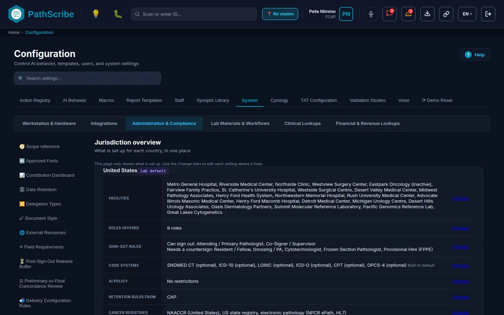
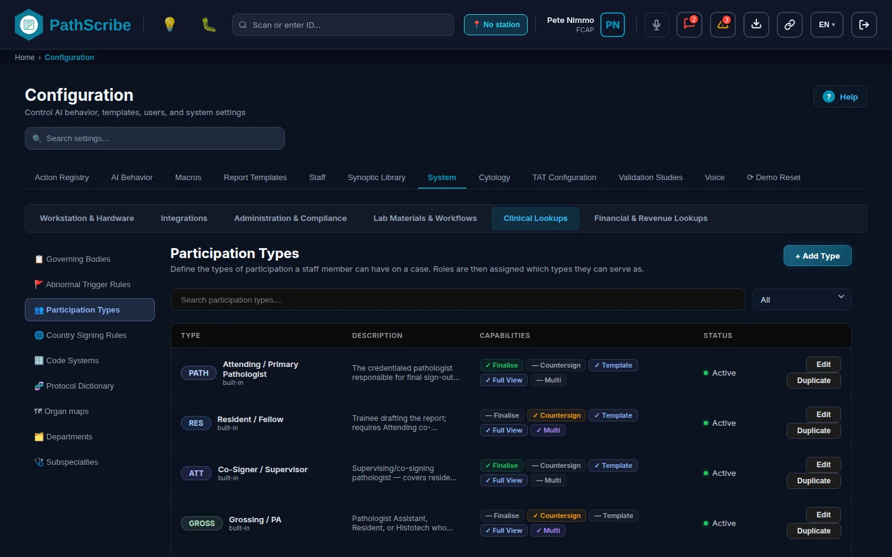
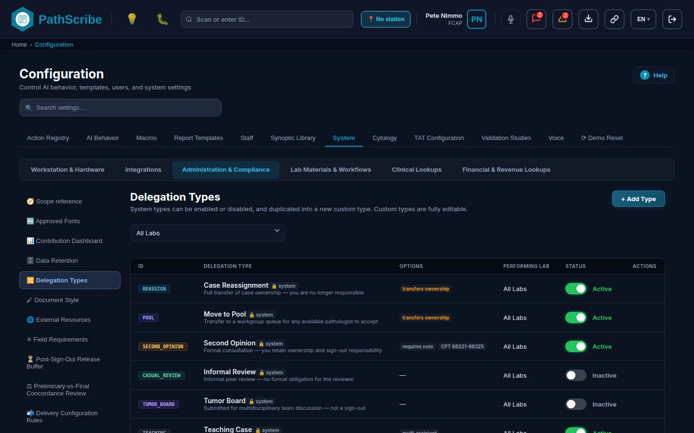
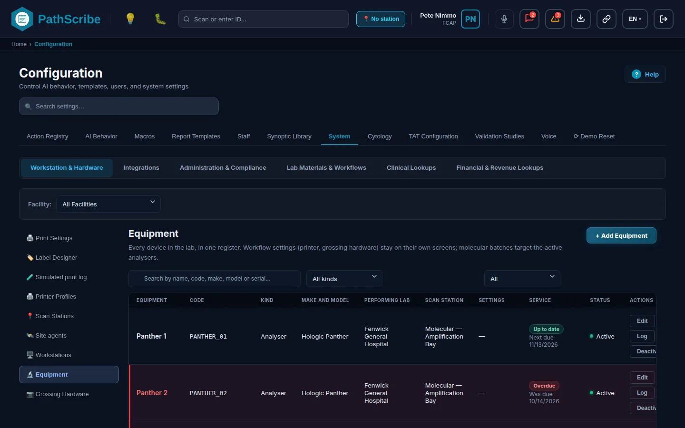
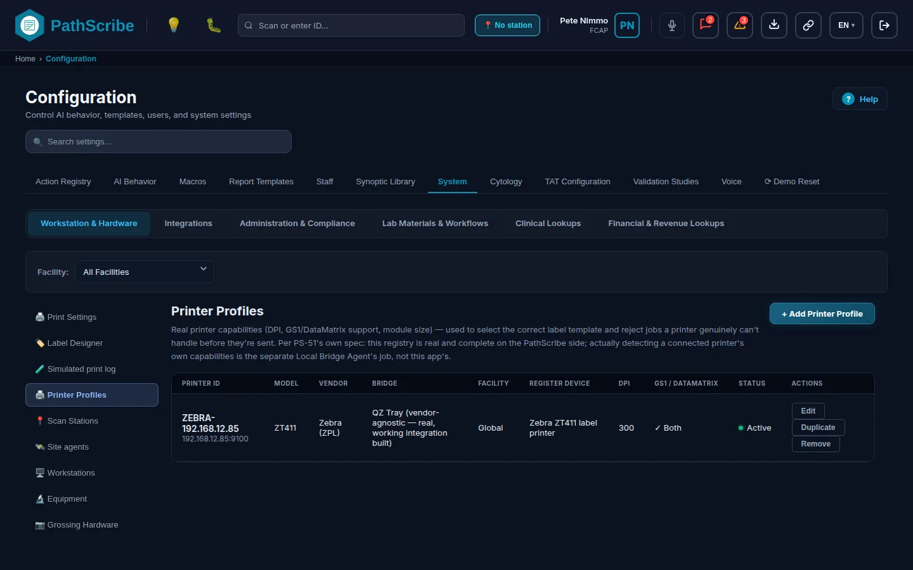
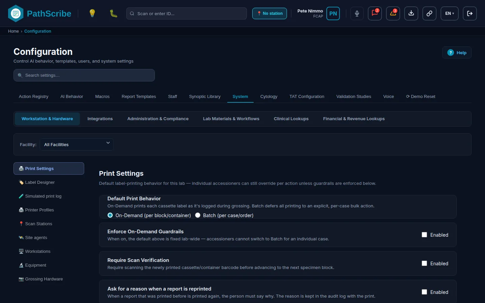
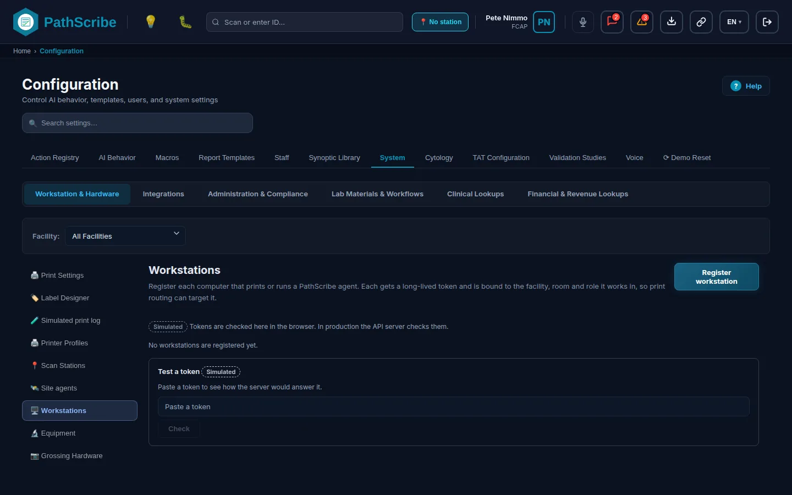
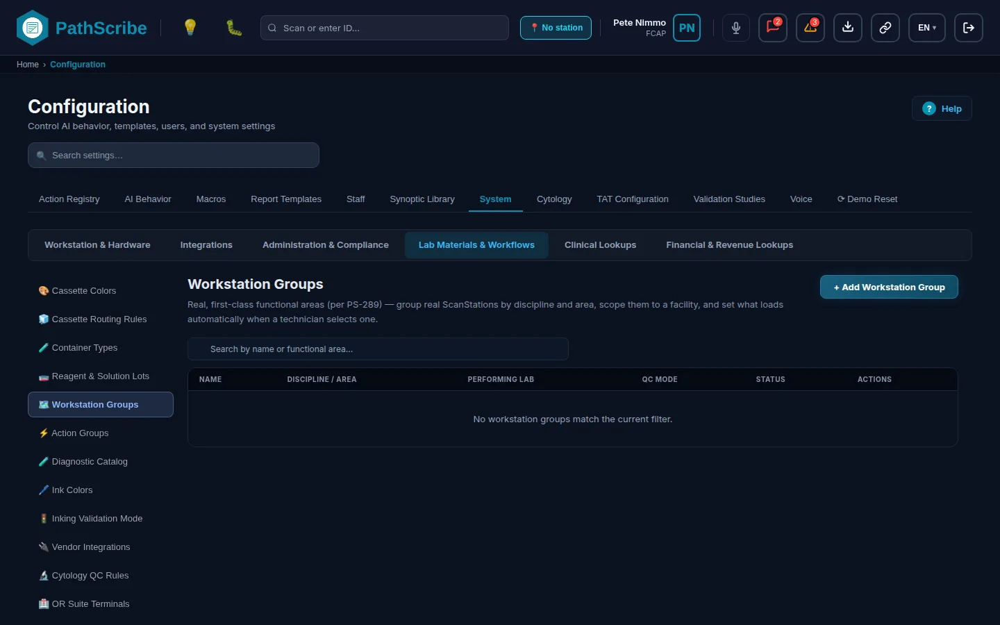
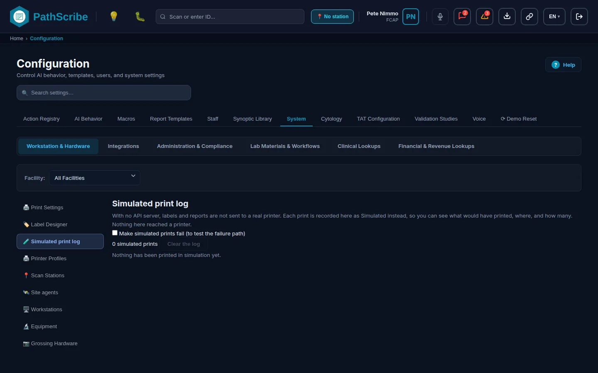

# Niveau 1 : Prérequis du système principal (à configurer en premier)
Le niveau 1 est la partie de la Configuration sur laquelle repose chaque autre paramètre. Il répond à quatre questions avant que tout le reste puisse être configuré : quels sites de laboratoire existent, qui peut faire quoi, quels appareils physiques les sites utilisent et quelles règles s'appliquent à l'ensemble de l'organisation. Les niveaux suivants s'appuient sur lui. Un service demande un établissement. Un modèle de compte rendu s'achemine selon le rôle. Une étiquette s'imprime par un profil d'imprimante. Si un écran du niveau 1 est vide, les écrans qui en dépendent affichent des listes de choix vides ou refusent d'enregistrer.
Configurez le niveau 1 dans cet ordre. Chaque écran ci-dessous comporte un encadré Ordre de configuration avec les mêmes informations, et le générateur vérifie qu'aucun écran n'en exige un qui vient après lui.
- Répertoire des établissements : l'organisation, ses laboratoires exécutants et ses clients prescripteurs.
- Types de participation : les rôles sur un dossier (principal, interne, consultant) et qui peut valider.
- Rôles : ce que chaque fonction peut ouvrir et modifier.
- Types de délégation : les façons de transmettre un dossier ou un compte rendu.
- Membres : les personnes.
- Accréditations : les revues de pratique supervisée des nouveaux membres du personnel.
- Sécurité de session : déconnexion pour inactivité, second facteur et politique de déconnexion.
- Accès du support : si le support ForMedrixAI peut accéder à vos données.
- Équipements : le registre de chaque appareil.
- Profils d'imprimante : ce que chaque imprimante d'étiquettes sait faire et comment un navigateur l'atteint.
- Agents de site : le programme qui imprime et déplace des fichiers sur le réseau d'un site.
- Postes de numérisation : les paillasses sous lesquelles un terminal peut s'identifier.
- Paramètres d'impression : formats d'étiquette, règles de code-barres et comportement d'impression.
- Concepteur d'étiquettes : la mise en page de chaque étiquette.
- Postes de travail : les ordinateurs enregistrés avec un jeton.
- Groupes de postes de travail : les paillasses regroupées par discipline et par zone.
- Matériel de macroscopie : les caméras et balances des paillasses de macroscopie.
- Conservation des données : la durée de conservation des enregistrements.
- Configuration du masque de dossier : la numérotation des accessions.
- Champs obligatoires : les champs dont une page a besoin avant de pouvoir être enregistrée.
- Ressources externes : les liens de référence.
Cinq écrans sont des références et non des étapes de configuration : l'onglet Système, l'onglet Personnel, le Référentiel de portée, l'Aperçu par juridiction et le Journal des impressions simulées.
Mots d'état. Chaque écran affiche l'un des cinq mots d'état définis dans la norme de rédaction : Réalisé, Démonstration, Partiel, Prévu, Non réalisé. Aujourd'hui, la plupart des services de données s'exécutent sur les données de démonstration du navigateur, et l'API de production est connectée service par service. Lorsqu'un écran dispose déjà d'un service de production et d'un contrat dans docs/architecture, il est Réalisé. Lorsque l'écran ne fonctionne que dans le navigateur, ou que son effet n'est encore appliqué nulle part, il est en Démonstration.
# Partie A : Gestion de l'entreprise et des établissements
Cette partie présente l'onglet Système, qui contient chaque écran des parties A, C et D, ainsi que l'unique écran qui définit la structure de votre organisation.
Fonctionnement de la hiérarchie. Il n'existe pas d'écran « Entreprise » distinct ni de type « hôpital » ou « clinique ». Tout est un établissement dans le Répertoire des établissements. Un établissement marqué comme Entreprise est le niveau supérieur (votre organisation). Les autres établissements le désignent comme leur Entreprise parente et en sont les affiliés. Ce que fait un établissement est déterminé par ses rôles (Laboratoire exécutant, Établissement prescripteur, etc.) et non par un type. Les emplacements (service, chambre, lit) dépendent d'un seul établissement. Le Référentiel de portée indique quels paramètres sont définis une seule fois pour l'entreprise et lesquels le sont par établissement.
Où se définissent la date, l'heure, le fuseau horaire et la langue. Il n'existe pas d'écran unique de « date et heure globales ». Chacun se définit à un endroit différent :
| Élément | Où le définir | Portée |
|---|---|---|
| Fuseau horaire | Un seul choix Fuseau horaire de l'établissement dans l'écran de paramètres du Tableau de bord des contributions. Il détermine le jour ou le mois où un dossier validé est comptabilisé, ainsi que l'année utilisée par la numérotation des accessions. | Toute l'organisation. Par défaut America/Phoenix. |
| Format de date et de nombre | Suit la langue d'affichage choisie dans la barre supérieure. L'onglet Formats d'identifiants de l'éditeur d'établissement affiche en lecture seule le format de date, le format d'heure et les paramètres régionaux de la juridiction. | Le navigateur de chaque utilisateur. |
| Langue d'affichage | Le bouton de langue dans la barre supérieure. Choix : anglais, français, français (Belgique), allemand, néerlandais, néerlandais (Belgique), coréen, espagnol. Conservée dans le navigateur sous le nom pathscribe_language. |
Chaque utilisateur, chaque navigateur. |
| Langue des rapports | Langue des rapports dans l'onglet Général de l'établissement. | Chaque laboratoire exécutant. |
| Langue d'orthographe | Langue d'orthographe dans la fiche du membre du personnel. | Chaque personne. |
| Plage de mise à jour de l'agent de site | Heures exprimées en heure locale du site, dans l'écran Agents de site. | Chaque site. |
Les heures enregistrées sont toujours en UTC. Rien dans le niveau 1 ne change cela.
# Onglet Système
Statut : Réalisé
1. Navigation : onglet de Configuration Système. Un lien direct tel que /configuration?tab=system§ion=print_settings ouvre une section.
2. Élément de maintenance : Système (le conteneur de toutes les sections du Système)
3. Objectif métier et portée. L'onglet Système contient les données de référence et les paramètres d'exploitation du laboratoire. Il comporte six groupes, affichés sous forme de boutons en haut : Poste de travail et matériel, Matériel et flux de travail du laboratoire, Références cliniques, Références financières et de revenus, Administration et conformité et Intégrations. Le choix d'un groupe n'affiche dans la barre latérale de gauche que les écrans de ce groupe. L'onglet Système est l'onglet par défaut à l'ouverture de la Configuration.
4. Prérequis et dépendances. L'ouverture de la Configuration exige la capacité screen:configuration:open. Chaque section vérifie ensuite sa propre capacité. Si vous ne la détenez pas, la section s'ouvre en lecture seule avec une note, et ses commandes sont désactivées.
5. Écran.

6. Référence des champs.
| Nom du champ | Type de données / format | Obligatoire/Facultatif | Description et logique métier | Valeur par défaut du système |
|---|---|---|---|---|
| Boutons de groupe | Six boutons | Sans objet | La sélection d'un groupe affiche les sections de ce groupe dans la barre latérale et ouvre sa première section. | Poste de travail et matériel |
| Barre latérale | Liste de sections | Sans objet | Un bouton par section du groupe actif, triés par nom. Une section réservée à un ingénieur ForMedrixAI est masquée, sauf si vous détenez sa capacité de plateforme. | Paramètres d'impression sélectionnés |
| Établissement : (sélecteur) | Liste de choix des laboratoires exécutants actifs, plus Tous les établissements | Facultatif | Affiché uniquement dans le groupe Poste de travail et matériel. Il limite à un seul site les écrans Paramètres d'impression, Profils d'imprimante, Postes de numérisation, Agents de site, Équipements et Matériel de macroscopie. Il n'est mémorisé que jusqu'à ce que vous quittiez l'onglet Système, et n'est pas enregistré. | Tous les établissements |
| Invite de modifications non enregistrées | Confirmation | Sans objet | Le passage à une autre section ou à un autre groupe avec des modifications non enregistrées vous demande de poursuivre la modification ou de les abandonner. | Sans objet |
7. Autorisations. Ouvrir : screen:configuration:open. La capacité propre à chaque section est indiquée dans cette section. Les rôles Administrateur et Directeur de laboratoire détiennent par défaut la capacité de l'écran de configuration.
Limites connues. Le sélecteur d'établissement n'est pas conservé lorsque vous rechargez la page. Les Postes de travail et les Groupes de postes de travail ne l'utilisent pas : les Postes de travail ont leur propre colonne d'établissement et les Groupes de postes de travail leur propre filtre Laboratoire exécutant.
# Répertoire des établissements
Statut : Réalisé
1. Navigation : onglet de Configuration Système > groupe Intégrations > Configuration de l'établissement. Le titre de la page est « Configuration des établissements ». C'est le même écran que le chapitre 3 présente sous le nom Configuration de l'établissement. 2. Élément de maintenance : Répertoire des établissements
3. Objectif métier et portée. Un établissement est tout site ou toute organisation que PathScribe connaît : vos propres laboratoires, les cliniques et hôpitaux qui vous envoient des prélèvements et les laboratoires de référence auxquels vous confiez des analyses. Chaque établissement porte ses rôles, ses coordonnées, les codes qui lui font correspondre les demandes entrantes, ses objectifs de délai de rendu, ses choix de remise des comptes rendus et son routage d'impression. L'organisation de premier niveau est un établissement dont la case Entreprise est cochée. Presque tous les autres écrans demandent un établissement ; c'est donc le premier écran à renseigner.
4. Prérequis et dépendances. Rien ne le précède. La liste Code du lieu de service de l'onglet Général lit le dictionnaire de codes, et la liste Modèle de l'onglet IA et performance ne présente que les modèles dont l'étude de validation est concluante. Les deux sont facultatives. Sans établissement, le sélecteur d'établissement de tous les autres écrans est vide.
5. Écran.

6. Référence des champs.
Page de liste
| Nom du champ | Type de données / format | Obligatoire/Facultatif | Description et logique métier | Valeur par défaut du système |
|---|---|---|---|---|
| Recherche | Texte | Facultatif | Correspond au nom de l'établissement, à l'autorité d'attribution, au nom du contact et à son adresse e-mail. | Vide |
| Filtre de statut | Onglets : Tous, Actif, Inactif, Non vérifié | Facultatif | Les établissements non vérifiés ont été créés automatiquement à partir d'une demande entrante et attendent d'être contrôlés par quelqu'un. | Tous |
| Filtre de rôle | Onglets : Tous les types, Laboratoire exécutant, Établissement prescripteur | Facultatif | Restreint selon le rôle. | Tous les types |
| Nombre de résultats | Texte (N sur M) | Sans objet | Indique combien d'établissements correspondent. | Sans objet |
| Colonne Établissement | Texte | Sans objet | Nom, code de l'autorité d'attribution, adresse et marqueur « affilié ». | Sans objet |
| Colonne Rôles | Pastilles | Sans objet | Les rôles de l'établissement et sa juridiction. | Sans objet |
| Colonne Contact | Texte | Sans objet | Nom et adresse e-mail du contact. | Sans objet |
| Colonne Délai de rendu | Texte | Sans objet | Affiche « Nh 1er contact », « Nh total » ou Par défaut. | Sans objet |
| Colonne Statut | Texte | Sans objet | Actif, Inactif ou Non vérifié. Une mention « Créé automatiquement » s'affiche lorsque l'établissement provient d'une demande. | Sans objet |
| + Ajouter un établissement | Bouton | Sans objet | Ouvre l'éditeur avec un établissement vierge. | Sans objet |
| Vérifier | Bouton de ligne | Sans objet | Affiché uniquement pour les établissements non vérifiés. Marque l'établissement comme contrôlé. | Sans objet |
| Modifier | Bouton de ligne | Sans objet | Ouvre l'éditeur. | Sans objet |
| Dupliquer | Bouton de ligne | Sans objet | Copie la configuration de niveau organisation dans un nouvel établissement. Elle efface l'autorité d'attribution, le numéro CLIA ou ISO, l'adresse et les coordonnées, le directeur, les identifiants de locataire hérités, les autorisations pédiatriques, le point de terminaison de l'interface et les identifiants de connexion. Le nom devient « Copie de » suivi de l'original. | Sans objet |
| Désactiver / Activer | Bouton de ligne | Sans objet | Non affiché pour les établissements non vérifiés. La désactivation d'un établissement encore utilisé ouvre Établissement encore utilisé et vous demande de confirmer. Les références ne sont pas supprimées. | Sans objet |
Fenêtre d'édition : onglet Général
| Nom du champ | Type de données / format | Obligatoire/Facultatif | Description et logique métier | Valeur par défaut du système |
|---|---|---|---|---|
| Nom de l'établissement | Texte | Obligatoire | Nom sous lequel l'établissement apparaît sur les demandes, les comptes rendus et les étiquettes. Erreur : « Le nom de l'établissement est requis ». | Vide |
| Autorité d'attribution | Texte, jusqu'à 10 caractères, converti en majuscules | Obligatoire | Les demandes HL7 entrantes sont associées à l'établissement par ce code ; il doit donc être unique (sans distinction de casse). | Vide |
| Statut | Choix : Actif, Inactif (Non vérifié n'est affiché que s'il est déjà défini) | Obligatoire | Les établissements inactifs ne sont pas proposés pour les nouveaux travaux. | Actif |
| Rôles | Cases à cocher : Laboratoire exécutant, Site interne d'envoi, Établissement prescripteur interne, Établissement prescripteur externe, Prélèvement d'échantillons, Laboratoire de référence | Obligatoire | Au minimum les rôles qui décrivent l'activité du site. Laboratoire exécutant débloque l'onglet IA et performance et les champs ci-dessous réservés aux laboratoires. | Établissement prescripteur externe |
| Code du lieu de service | Liste de choix issue des codes de lieu de service | Facultatif | Exige le rôle Prélèvement d'échantillons. | Aucun |
| Numéro d'accréditation CLIA / ISO | Texte | Facultatif | Exige Laboratoire exécutant ou Entreprise. Utilisé dans les en-têtes de comptes rendus. | Vide |
| Nom du directeur de laboratoire | Texte | Facultatif | Exige Laboratoire exécutant ou Entreprise. Utilisé dans les en-têtes de comptes rendus. | Vide |
| URL du logo d'en-tête | Lien https | Facultatif | Exige Laboratoire exécutant ou Entreprise. Seule l'adresse est enregistrée, jamais l'image. | Vide |
| Les actes nécessitent une approbation de facturation | Choix : Comme l'entreprise, Activé, Désactivé | Facultatif | Laboratoire exécutant ou Entreprise uniquement. « Comme l'entreprise » n'est proposé qu'aux laboratoires qui ne sont pas l'entreprise. | Comme l'entreprise |
| Politique de page pour les addenda : Forcer les addenda sur une page dédiée | Interrupteur Oui/Non | Facultatif | Laboratoire exécutant uniquement. | Désactivé |
| Langue des rapports | Choix parmi les huit langues d'affichage | Facultatif | Laboratoire exécutant uniquement. La valeur par défaut suit la juridiction. | Selon la juridiction |
| Détection d'anomalies : Activée pour cet établissement | Interrupteur Oui/Non | Facultatif | Laboratoire exécutant uniquement. | Désactivé |
| Juridiction | Choix parmi 14 : US, CA, GB_EW, GB_SCT, GB_NIR, IE, AU, NZ, KR, BE, NL, DE, FR, ES | Obligatoire | Définit les règles du pays de l'établissement, le format de date, le correcteur orthographique et la norme d'identifiant de patient (affichée dans Formats d'identifiants). | US |
| Identifiant du registre national de dépistage | Texte | Facultatif | L'identifiant de l'établissement auprès d'un registre national de dépistage. | Vide |
| Étiquetage des échantillons / blocs | Choix : alpha (Échantillon A, B, C et Bloc A1, A2, A3) ou numérique (Échantillon 1, 2, 3 et Bloc 1A, 1B, 1C) | Obligatoire | La façon dont les nouveaux échantillons et blocs sont désignés par des lettres. | Alpha |
| Entreprise | Case à cocher : « Il s'agit d'un établissement d'entreprise de premier niveau » | Facultatif | Marque l'établissement comme le niveau supérieur. Débloque les champs réservés à l'entreprise (Connexion au moteur d'interface, Messagerie sécurisée). | Désactivé |
| Entreprise parente | Liste de choix des autres établissements d'entreprise | Facultatif | Fait de cet établissement un affilié de cette entreprise. | Aucune |
| Préfixe du contact | Choix : M., Mme, Mme, Mx, Dr | Facultatif | Titre de la personne de contact. | Vide |
| Suffixe du contact | Choix parmi des préréglages, ou Autre | Facultatif | Par exemple Jr. ou MD. | Vide |
| Prénom(s) du contact, Nom(s) de famille du contact, Nom préféré du contact | Texte | Facultatif | La personne de contact. | Vide |
| Texte, doit contenir « @ » | Facultatif | Adresse e-mail du contact. | Vide | |
| Téléphone, Fax | Texte | Facultatif | Numéros du contact. | Vide |
| Adresse, Ville, État / province / région, Code postal | Texte | Facultatif | Adresse postale. | Vide |
Les champs de contact obligatoires proviennent de la page Éditeur d'établissement des Champs obligatoires : nom, autorité d'attribution, e-mail, téléphone, fax, adresse, ville, région, code postal et personne de contact. Le pied de page indique ce qui reste obligatoire.
Fenêtre d'édition : onglet Intégration SIL
| Nom du champ | Type de données / format | Obligatoire/Facultatif | Description et logique métier | Valeur par défaut du système |
|---|---|---|---|---|
| Connexion au moteur d'interface : point de terminaison | Texte | Obligatoire une fois configuré | Entreprise uniquement. L'endroit où PathScribe envoie les messages au moteur d'interface. | Vide |
| Version HL7 | Choix : 2.3, 2.4, 2.5, 2.5.1, 2.6 | Facultatif | Entreprise uniquement. | 2.5.1 |
| Type d'authentification | Choix : aucun, de base, oauth2, clé API | Facultatif | Entreprise uniquement. | aucun |
| Identifiants configurés | Oui/Non | Facultatif | Entreprise uniquement. Indique qu'un identifiant de connexion est configuré. Le secret lui-même n'est pas saisi ici. | Non |
| Le SIL connecté gère les statuts majeurs des dossiers | Interrupteur Oui/Non | Facultatif | Entreprise uniquement. | Désactivé |
| Les pathologistes peuvent initier un addenda/amendement directement dans PathScribe | Interrupteur Oui/Non | Facultatif | Entreprise uniquement. | Désactivé |
| Remplacer l'acheminement de l'entreprise | Interrupteur Oui/Non | Facultatif | Établissements autres que l'entreprise uniquement. Désactivé signifie que l'établissement hérite de la connexion de son parent. | Désactivé |
| ID de l'établissement expéditeur (MSH-4) | Texte | Obligatoire une fois configuré | Identifie l'établissement dans les messages HL7 sortants. | Vide |
| ID de l'établissement destinataire (MSH-6) | Texte | Facultatif | Le code du système destinataire. | Vide |
| Remplacement du canal sortant | Texte | Facultatif | Un autre canal du moteur pour cet établissement. | Vide |
| Envoyer un seul PDF combiné par dossier | Interrupteur Oui/Non | Facultatif | Laboratoire exécutant uniquement. | Désactivé |
Fenêtre d'édition : onglet Formats d'identifiants
| Nom du champ | Type de données / format | Obligatoire/Facultatif | Description et logique métier | Valeur par défaut du système |
|---|---|---|---|---|
| Interrupteur de remplacement | Interrupteur Oui/Non | Facultatif | Établissements autres que l'entreprise uniquement. Désactivé utilise les formats du parent. | Désactivé |
| Lignes de format | Liste regroupée en niveau 1 (recherche : un code-barres de lame ouvre le dossier) et niveau 2 (correspondance interne) | Sans objet | Chaque ligne comporte un interrupteur d'activation, une zone de test et un bouton d'affichage du motif. Les motifs sont fixés par le système et ne peuvent pas être modifiés. | Selon la juridiction |
| Filtre de préréglage SIL | Choix | Facultatif | Restreint les lignes à un préréglage. | Tous |
| Simuler une numérisation | Texte | Facultatif | Saisissez ou numérisez une valeur pour voir quel format correspond. | Vide |
| Informations régionales | Texte en lecture seule | Sans objet | Affiche la juridiction, le format de date, le format d'heure, les paramètres régionaux, le correcteur orthographique et la norme d'identifiant de patient. | Sans objet |
| Enregistrer les modifications | Bouton | Sans objet | Enregistre le remplacement. | Sans objet |
Fenêtre d'édition : onglet Rapports
| Nom du champ | Type de données / format | Obligatoire/Facultatif | Description et logique métier | Valeur par défaut du système |
|---|---|---|---|---|
| Format du rapport | Choix : PDF, HL7, Les deux | Obligatoire | La façon dont les comptes rendus sont envoyés à cet établissement. | |
| Mode de livraison | Choix : E-mail, Fax, Portail, HL7 | Obligatoire | La façon dont les comptes rendus lui parviennent. | Portail |
| Publier automatiquement les rapports à la finalisation | Interrupteur Oui/Non | Facultatif | Désactivé | |
| Copier le rapport au médecin prescripteur | Interrupteur Oui/Non | Facultatif | Désactivé |
Fenêtre d'édition : onglet Délai de traitement et escalade
| Nom du champ | Type de données / format | Obligatoire/Facultatif | Description et logique métier | Valeur par défaut du système |
|---|---|---|---|---|
| Objectif de premier contact | Nombre entier d'heures, de 1 à 168 | Facultatif | Vide utilise la valeur par défaut du système. | Vide (valeur par défaut du système 4 heures) |
| Objectif total de délai de traitement du dossier | Nombre entier d'heures, de 1 à 720 | Facultatif | Vide utilise la valeur par défaut du système. | Vide (valeur par défaut du système 24 heures) |
| Priorité d'escalade | Choix : élevée, critique | Facultatif | Priorité d'une alerte de retard. | élevée |
| Destinataires de l'escalade | Cases à cocher : Groupe de pathologie, Administrateur du laboratoire, Médecin prescripteur | Facultatif | Si aucune case n'est cochée, les alertes sont supprimées pour cet établissement. Les dossiers à accès restreint (pédiatriques) remontent toujours au niveau Critique. | Aucun |
Fenêtre d'édition : onglet IA et performance (Laboratoire exécutant uniquement)
| Nom du champ | Type de données / format | Obligatoire/Facultatif | Description et logique métier | Valeur par défaut du système |
|---|---|---|---|---|
| Rédaction automatique du compte rendu | Choix : hériter, activée, désactivée | Facultatif | Hériter | |
| Remplacement du délai d'inactivité de session | Choix : hériter, 5, 10, 15, 20, 30, 60 minutes | Facultatif | Remplace la valeur par défaut de l'organisation définie dans Sécurité de session pour les dossiers de ce laboratoire. | Hériter |
| Taux d'échantillonnage aléatoire de la révision codifiée | Nombre entier, de 0 à 100 | Facultatif | Pourcentage de dossiers échantillonnés pour la révision codifiée. Vide signifie aucun. Sa modification est inscrite dans le journal d'audit sous la forme « Code review random sampling rate changed ». | Vide |
| Délai tampon après signature avant publication | Choix : hériter ou remplacer | Facultatif | Remplacer fait apparaître Délai tampon activé, durée (de 1 à 30 minutes) et Contourner pour STAT. | Hériter (valeur par défaut du remplacement : 10 minutes) |
| Modèle | Liste de choix : hériter, ou modèles dont l'étude de validation est concluante | Facultatif | Mode modification uniquement. | Hériter |
Fenêtre d'édition : onglet Emplacements (mode modification uniquement)
| Nom du champ | Type de données / format | Obligatoire/Facultatif | Description et logique métier | Valeur par défaut du système |
|---|---|---|---|---|
| Point de soins | Texte | Obligatoire | Utilisé par les règles de routage d'impression et par les postes de travail. | Vide |
| Chambre, Lit, Bâtiment, Étage | Texte | Facultatif | Les éléments de l'emplacement. | Vide |
| Statut de l'emplacement | Choix (table HL7 0306) | Facultatif | Vide | |
| Type d'emplacement de la personne | Choix (table HL7 0305) | Facultatif | Vide | |
| Vérifier, Activer, Désactiver | Boutons | Sans objet | Les emplacements créés automatiquement à partir d'un segment PV1 entrant arrivent comme Non vérifiés. | Sans objet |
Fenêtre d'édition : onglet Impression (mode modification uniquement ; dispose de son propre Enregistrer)
| Nom du champ | Type de données / format | Obligatoire/Facultatif | Description et logique métier | Valeur par défaut du système |
|---|---|---|---|---|
| Imprimer les rapports publiés | Interrupteur Oui/Non | Facultatif | Laboratoire exécutant uniquement. | Désactivé |
| Remise | Choix : imprimante nommée QZ Tray, imprimante réseau directe, moteur d'interface ou serveur d'impression | Obligatoire lorsque l'impression est activée | Laboratoire exécutant uniquement. | Aucun |
| Format de papier | Choix : Par défaut (Letter), Letter, A4, Legal | Facultatif | Laboratoire exécutant uniquement. | Par défaut |
| Nom de l'imprimante | Texte | Obligatoire pour QZ Tray | Vide | |
| Type d'imprimante | Choix : imprimante de l'agent de site, adresse de l'imprimante | Obligatoire pour l'impression directe | Aucun | |
| Protocole | Choix : RAW 9100, LPR/LPD, IPP | Obligatoire pour l'impression directe | RAW 9100 | |
| Adresse, Port | Texte, nombre entier de 1 à 65535 | Obligatoire pour l'impression directe | Vide, 9100 | |
| Nom de la file, chemin IPP, Nom d'affichage | Texte | Facultatif | File pour LPR, chemin pour IPP. | Vide |
| Bac à papier | Choix : Valeur par défaut du rapport, Bac 1 papier à en-tête, Bac 2 papier ordinaire | Facultatif | Tout établissement. | Valeur par défaut du rapport |
| Faces | Choix : Valeur par défaut du rapport, Recto verso, Recto seul | Facultatif | Tout établissement. | Valeur par défaut du rapport |
Fenêtre d'édition : onglet Messagerie sécurisée (mode modification uniquement, Entreprise uniquement)
| Nom du champ | Type de données / format | Obligatoire/Facultatif | Description et logique métier | Valeur par défaut du système |
|---|---|---|---|---|
| Lignes de passerelle | NHSMAIL, EGRESS, ACCURX, PAUBOX, VIRTRU, ZIX, HEALTHLINK, MEDICAL_OBJECTS, REFERRALNET, KR_HIE | Facultatif | Une ligne par passerelle. | Désactivé |
| Activée | Interrupteur Oui/Non | Facultatif | Désactivé | |
| Par défaut | Bouton radio | Facultatif | La passerelle utilisée par défaut. | Aucun |
| Adresse ou identifiant de l'expéditeur | Texte | Facultatif | Vide | |
| Accord au dossier, référence, signé le, expire le | Oui/Non, texte, dates | Facultatif | Les données du patient ne sont transmises que tant qu'un accord est en vigueur. | Non |
Fenêtre d'édition : onglet Orthographe (mode modification uniquement, Laboratoire exécutant uniquement)
| Nom du champ | Type de données / format | Obligatoire/Facultatif | Description et logique métier | Valeur par défaut du système |
|---|---|---|---|---|
| Liste de mots | Liste de texte | Facultatif | Les mots que le correcteur orthographique accepte dans cet établissement. Les modifications sont auditées. | Vide |
7. Autorisations. Ouvrir : screen:configuration:open. Ajouter, modifier, désactiver, réactiver et vérifier : config:facilities:manage. Onglet Impression : config:print-settings:manage. Onglet Messagerie sécurisée : config:secure-messaging:manage. Les rôles Administrateur et Directeur de laboratoire les détiennent par défaut. Les modifications de champ que la page audite sont indiquées ci-dessus.
Limites connues. L'envoi par messagerie sécurisée est simulé : messageService.sendSecureEmail enregistre le message, mais aucun véritable transport par passerelle n'existe encore (PS-332). Le texte de l'onglet IA et performance renvoie la valeur par défaut du délai tampon vers « Configuration > Système > Intégration SIL », mais cette valeur par défaut se trouve dans Tampon de libération après signature.
# Référentiel de portée
Statut : Réalisé
1. Navigation : onglet de Configuration Système > groupe Administration et conformité > Référentiel de portée 2. Élément de maintenance : Référentiel de portée (lecture seule)
3. Objectif métier et portée. Une page qui répond à une seule question : ce paramètre est-il défini une fois pour l'organisation, une fois par établissement, ou à plusieurs niveaux ? Elle définit aussi les termes entreprise, établissement exécutant et établissement prescripteur. Elle ne modifie rien.
4. Prérequis et dépendances. Aucun. Elle lit une liste fixe conservée dans le produit. Seuls neuf paramètres y figurent, et la page indique que les domaines non listés n'ont pas été vérifiés.
5. Écran.

6. Référence des champs.
| Nom du champ | Type de données / format | Obligatoire/Facultatif | Description et logique métier | Valeur par défaut du système |
|---|---|---|---|---|
| Sens des termes | Trois définitions | Sans objet | Entreprise (toute l'organisation), Établissement exécutant (un site de laboratoire) et Établissement prescripteur ou client (celui qui envoie le dossier). | Sans objet |
| Domaine de paramétrage | Texte | Sans objet | Le paramètre : Politique de second facteur à la connexion, Délai de déconnexion sur inactivité, Paramètres d'impression, Règles d'acheminement des impressions, Objectifs de délai de traitement, Agents de site, Postes de numérisation, Équipement, Postes de travail. | Sans objet |
| Où il est défini | Texte | Sans objet | L'un des choix suivants : Entreprise, Défaut de l'entreprise avec exception par établissement, Chaque établissement, Plusieurs niveaux (le plus précis l'emporte). | Sans objet |
| Fonctionnement | Texte | Sans objet | Une phrase par paramètre. Un lien ouvre l'écran où se trouve le paramètre. | Sans objet |
7. Autorisations. Ouvrir : screen:configuration:open. Il n'y a rien à modifier et aucune capacité de section.
Limites connues. La liste couvre neuf paramètres. Ne considérez pas un paramètre absent comme valable pour toute l'entreprise ou par établissement.
# Aperçu par juridiction
Statut : Réalisé
1. Navigation : onglet de Configuration Système > groupe Administration et conformité > Aperçu par juridiction 2. Élément de maintenance : Aperçu par juridiction (lecture seule)
3. Objectif métier et portée. Une carte par pays montrant ce qui y est configuré, afin que vous voyiez les lacunes sans ouvrir sept écrans. Elle liste les pays qui ont des règles de validation par pays, ainsi que tout pays utilisé par un établissement ou par le laboratoire. Chaque ligne comporte un lien Modifier vers l'écran où ce paramètre est modifié. La page indique : « Cette page affiche seulement la configuration. »
4. Prérequis et dépendances. Elle lit les établissements ; ajoutez-les donc d'abord. Une carte de pays vide signifie que la liste des établissements ou les règles qui s'y rattachent sont vides.
5. Écran.

6. Référence des champs.
| Nom du champ | Type de données / format | Obligatoire/Facultatif | Description et logique métier | Valeur par défaut du système |
|---|---|---|---|---|
| Établissements | Liste de texte | Sans objet | Les établissements de ce pays. Un établissement inactif affiche « (inactif) ». Modifier ouvre Configuration de l'établissement. | Sans objet |
| Rôles proposés | Nombre | Sans objet | Rôles de participation proposés. Modifier ouvre Types de participation. | Sans objet |
| Règles de signature | Texte | Sans objet | Les rôles « Peut signer » et les rôles « Contresignature requise ». Modifier ouvre Règles de signature par pays. | Sans objet |
| Systèmes de codage | Liste de texte | Sans objet | Chaque système, avec obligatoire ou facultatif. Modifier ouvre Systèmes de codage. | Sans objet |
| Registres du cancer | Liste de texte | Sans objet | Les registres configurés pour le pays. Modifier ouvre Rapports du registre du cancer. | Sans objet |
| Politique IA | Texte | Sans objet | L'un des choix suivants : Aucune restriction, Tous les services IA autorisés, Autorisé (une liste), Limité aux fournisseurs de la région de données, plus le nombre de règles d'établissement. Modifier ouvre l'onglet Comportement de l'IA. | Sans objet |
| Règles de conservation de | Texte | Sans objet | « Enregistré pour ce pays » ou « Défaut intégré ». Modifier ouvre Organismes de réglementation. | Sans objet |
7. Autorisations. Ouvrir : screen:configuration:open. Il n'y a rien à modifier ici. Chaque lien Modifier exige la capacité de l'écran qu'il ouvre.
Limites connues. Aucune connue.
# Partie B : Gestion des utilisateurs, rôles et matrice des autorisations
Cette partie traite de qui peut se connecter et de ce que chaque personne peut faire. L'accès dans PathScribe est construit à partir de capacités. Une capacité est une autorisation écrite sous la forme domain:object:verb, par exemple config:roles:manage. Un rôle est un ensemble nommé de capacités. Une personne obtient des capacités par ses rôles, limitées aux établissements figurant dans sa fiche. Les capacités marquées à risque élevé sont consignées dans le journal d'audit lorsqu'elles sont utilisées.
La matrice des autorisations. La matrice est la liste des capacités de l'écran Rôles : chaque capacité, regroupée, avec une coche pour chaque rôle. Le catalogue et les attributions de départ sont fixés dans le produit (capabilityCatalog.ts et capabilitySeeds.ts). Quatre règles comptent lorsque vous planifiez les rôles :
- Rôles intégrés. Pathologiste, Résident, Fellow, Assistant de pathologie, Administrateur, Médecin, Personnel du bloc opératoire, Auteur de modèles, Approbateur de modèles, Directeur de laboratoire, Réviseur AQ, Superadministrateur, Préposé à l'accession, Histotechnicien, Cytotechnicien et Technicien en biologie moléculaire sont fournis prêts à l'emploi. Un rôle que vous ajoutez vous-même démarre sans aucune capacité de configuration.
- Administrateur et Directeur de laboratoire. L'Administrateur détient toutes les capacités de configuration. Le Directeur de laboratoire détient le même ensemble, sauf deux groupes : le groupe d'administration (
config:roles:manage,config:staff:edit,config:staff-access:assign,config:staff-password:manage,config:field-requirements:manage,auth:mfa-enrolment:reset,config:demo-data:reset) et la rédaction de protocoles. Seuls l'Administrateur et le Superadministrateur gèrent donc les rôles, le personnel et les champs obligatoires. - Superadministrateur. Un rôle ForMedrixAI. Il détient toutes les capacités sauf
config:ai-prompt:approve; un hôpital ne peut pas le modifier, et un hôpital ne peut pas l'attribuer à son propre personnel. - Séparation des tâches.
config:clinical-mismatch-rules:manageetconfig:ai-prompt:approvene peuvent pas être détenues ensemble par un même rôle ou par une même personne. L'enregistrement est refusé.
Une modification de configuration refusée affiche le motif CONFIG_NOT_PERMITTED. Une section que vous ne pouvez pas modifier s'ouvre en lecture seule.
# Onglet Personnel
Statut : Réalisé
1. Navigation : onglet de Configuration Personnel 2. Élément de maintenance : Personnel (le conteneur des Membres, des Rôles et des Accréditations)
3. Objectif métier et portée. Un seul onglet pour la partie de la configuration qui concerne les personnes. Il comporte trois sous-onglets : Membres du personnel, Dictionnaire des rôles et Revue des accréditations. Un lien tel que /configuration?tab=staff§ion=roles ouvre un sous-onglet (members, roles ou credentialing).
4. Prérequis et dépendances. L'ouverture de la Configuration exige screen:configuration:open. Chaque sous-onglet vérifie sa propre capacité.
5. Écran.

6. Référence des champs.
| Nom du champ | Type de données / format | Obligatoire/Facultatif | Description et logique métier | Valeur par défaut du système |
|---|---|---|---|---|
| Membres du personnel | Sous-onglet | Sans objet | Les personnes. Voir Membres. | Sélectionné |
| Dictionnaire des rôles | Sous-onglet | Sans objet | Les rôles. Voir Rôles. | Sans objet |
| Revue des accréditations | Sous-onglet | Sans objet | Affectations de pratique supervisée. Voir Accréditations. | Sans objet |
7. Autorisations. Ouvrir : screen:configuration:open. La capacité de chaque sous-onglet figure dans son propre écran.
Limites connues. Aucune connue.
# Types de participation
Statut : Réalisé
1. Navigation : onglet de Configuration Système > groupe Références cliniques > Types de participation 2. Élément de maintenance : Types de participation
3. Objectif métier et portée. Un type de participation est le rôle que joue une personne sur un dossier : pathologiste principal, résident, consultant, macroscopie, etc. C'est aussi là que se décide l'autorité de signature : si ce rôle peut émettre le compte rendu final, si le compte rendu nécessite une contre-signature, si la personne voit l'ensemble du dossier et si plusieurs personnes peuvent tenir ce rôle. Les rôles reçoivent ensuite les types que leurs titulaires peuvent exercer.
4. Prérequis et dépendances. La section d'autorité de validation par établissement exige que les établissements existent. L'écran Rôles lit cette liste pour son onglet Participation au cas ; définissez donc les types avant les rôles. Sans cela, un rôle n'a aucun type à proposer.
5. Écran.

6. Référence des champs.
Page de liste
| Nom du champ | Type de données / format | Obligatoire/Facultatif | Description et logique métier | Valeur par défaut du système |
|---|---|---|---|---|
| Recherche | Texte | Facultatif | Texte indicatif « Rechercher des types de participation ». | Vide |
| Filtre | Onglets, en commençant par Tous | Facultatif | Tous | |
| Type, Description, Capacités, Statut | Colonnes | Sans objet | Les capacités s'affichent sous forme de pastilles courtes : Finaliser, Contresigner, Modèle, Vue complète, Multi. Une pastille « intégré » signale les types du système. | Sans objet |
| Nombre en pied de page | Texte | Sans objet | « N actif(s), M au total ». | Sans objet |
| + Ajouter un type | Bouton | Sans objet | Ouvre l'éditeur. | Sans objet |
| Modifier, Dupliquer | Boutons de ligne | Sans objet | Dupliquer ouvre une copie à modifier. | Sans objet |
Le produit fournit ces types système : primary, resident, attending, grossing, cytotechnologist, consultant, frozen, second_opinion, provisional_hire, biomedical_scientist et bms_advanced_practitioner. Les types système ne peuvent pas être supprimés. Pour un type intégré, vous pouvez modifier le libellé, la description et la couleur. L'indicateur de finalisation de primary est verrouillé.
Fenêtre d'édition
| Nom du champ | Type de données / format | Obligatoire/Facultatif | Description et logique métier | Valeur par défaut du système |
|---|---|---|---|---|
| Libellé | Texte | Obligatoire | Doit être unique. Erreurs : « Le libellé est requis » et « Un type de participation nommé ... existe déjà ». | Vide |
| Abréviation | Texte, jusqu'à 12 caractères | Obligatoire | Doit être unique. Affichée dans les en-têtes de dossier et dans les listes. | Vide |
| Description | Texte | Facultatif | Vide | |
| Couleur | Échantillons prédéfinis ou couleur personnalisée | Facultatif | #8AB4F8 |
|
| Peut finaliser / signer | Interrupteur Oui/Non | Facultatif | Ce rôle peut émettre le compte rendu final signé. | Désactivé |
| Contresignature requise | Interrupteur Oui/Non | Facultatif | Les comptes rendus de ce rôle doivent être contresignés par un médecin superviseur. | Désactivé |
| Peut utiliser un modèle de rapport | Interrupteur Oui/Non | Facultatif | Ce rôle peut se voir attribuer un modèle de rapport pour un compte rendu structuré. | Désactivé |
| Peut voir l'ensemble du dossier | Interrupteur Oui/Non | Facultatif | Accès complet au dossier, y compris tous les prélèvements et les comptes rendus antérieurs. | Désactivé |
| Autorise plusieurs par dossier | Interrupteur Oui/Non | Facultatif | Plusieurs personnes peuvent tenir le rôle en même temps sur un même dossier. | Activé |
| Statut | Actif / Inactif | Facultatif | Actif | |
| Autorité de validation au niveau de l'établissement | Un bloc par laboratoire exécutant | Facultatif | Chaque laboratoire hérite de la règle réglementaire par défaut de sa juridiction, ou de la valeur par défaut de la plateforme. Ne dérogez que pour une exemption locale ou un dispositif d'habilitation. | Hérité |
| Contresignature requise dans ce laboratoire, Peut finaliser / signer dans ce laboratoire, Peut voir l'ensemble du dossier dans ce laboratoire | Dérogations Oui/Non | Facultatif | Chacune indique sa source : valeur par défaut de la plateforme, valeur par défaut de la juridiction, ou « Dérogation au niveau de l'établissement par nom le date ». Revenir à la valeur héritée supprime la dérogation à l'enregistrement. | Hérité |
| Justification | Texte | Facultatif | Consignée dans le journal d'audit avec la dérogation. | Vide |
7. Autorisations. Ouvrir : screen:configuration:open. Ajouter, modifier, dupliquer, déroger : config:participation-types:manage (risque élevé, audité ; les dérogations par établissement sont consignées dans le journal d'audit avec la justification). Les rôles Administrateur et Directeur de laboratoire la détiennent par défaut.
Limites connues. Aucune connue.
# Dictionnaire des rôles
Statut : Réalisé
1. Navigation : onglet de Configuration Personnel > sous-onglet Dictionnaire des rôles 2. Élément de maintenance : Rôles
3. Objectif métier et portée. Un rôle est un ensemble de capacités et une liste des types de participation que ses titulaires peuvent exercer. Cet écran est la matrice des autorisations : vous cochez les capacités que détient chaque rôle, et vous ajoutez vos propres rôles. Il contient aussi le jeu de commandes vocales et clavier du rôle, qui est une commodité et non un contrôle d'accès.
4. Prérequis et dépendances. L'onglet Participation au cas liste les types de participation ; définissez-les donc d'abord. Sans cela, l'onglet ne propose aucun type. Les rôles sont ensuite choisis pour les personnes dans l'écran Membres.
5. Écran.

6. Référence des champs.
Page de liste
| Nom du champ | Type de données / format | Obligatoire/Facultatif | Description et logique métier | Valeur par défaut du système |
|---|---|---|---|---|
| Recherche | Texte | Facultatif | Texte indicatif « Rechercher des rôles ». | Vide |
| Rôle | Pastille et nom | Sans objet | Signale les rôles intégrés et les rôles « gérés par ForMedrixAI ». | Sans objet |
| Description | Texte | Sans objet | Sans objet | |
| Accès aux cas | Oui/Non | Sans objet | Si le rôle travaille sur des dossiers. | Sans objet |
| Accès à la configuration | Oui/Non | Sans objet | Si le rôle ouvre la Configuration. | Sans objet |
| Autorisations | Nombre (n sur le total) | Sans objet | Sans objet | |
| Commandes | Barre | Sans objet | Commandes vocales et clavier activées. | Sans objet |
| Modifier / Voir, Dupliquer | Boutons de ligne | Sans objet | Un rôle que vous ne pouvez pas modifier s'ouvre en Voir. Dupliquer impose que la copie soit un rôle personnalisé (non intégré). | Sans objet |
Fenêtre du rôle
| Nom du champ | Type de données / format | Obligatoire/Facultatif | Description et logique métier | Valeur par défaut du système |
|---|---|---|---|---|
| Nom | Texte | Obligatoire | Vide | |
| Couleur | Sélecteur de couleur | Facultatif | #8AB4F8 |
|
| Description | Texte | Facultatif | Vide | |
| Accès aux cas | Case à cocher | Facultatif | Désactivé | |
| Accès à la configuration | Case à cocher | Facultatif | Désactivé | |
| Onglet Autorisations | Cases à cocher, regroupées | Facultatif | Une case par capacité. Celles à risque élevé portent une étiquette Audité. Une case affiche « Nécessite » lorsqu'elle dépend d'une autre capacité et « Requise par » lorsque d'autres en dépendent. | Aucune cochée |
| Onglet Commandes | Cases à cocher | Facultatif | Commandes vocales et clavier du rôle. Elles ne contrôlent pas l'accès. | Valeurs par défaut du rôle |
| Onglet Participation au cas | Cases à cocher des types de participation actifs | Facultatif | Les types que les titulaires de ce rôle peuvent exercer. Un rôle Cytotechnicien ne peut pas détenir de types de pathologiste. | Aucun |
| Onglet Référence des actions | Liste en lecture seule | Sans objet | Un aide-mémoire des actions. | Sans objet |
L'enregistrement est refusé, avec un message, dans ces cas : vous n'avez pas l'autorisation ; une capacité n'est pas valide ; la modification placerait config:clinical-mismatch-rules:manage et config:ai-prompt:approve ensemble sur un même rôle, ou sur un rôle détenu par une seule personne (séparation des tâches) ; la modification ne laisserait aucun rôle attribuable avec config:roles:manage (au moins un doit le conserver) ; le rôle est Superadministrateur (lecture seule) ; ou un rôle Cytotechnicien reçoit un type de participation de pathologiste. Une modification des capacités d'un rôle est consignée dans le journal d'audit sous la forme « Role capabilities changed ».
7. Autorisations. Ouvrir : screen:configuration:open. Ajouter, modifier, dupliquer : config:roles:manage (risque élevé, audité). Les rôles Administrateur et Superadministrateur la détiennent par défaut. Le Directeur de laboratoire ne la détient pas.
Limites connues. Le Superadministrateur ne peut pas être modifié par un hôpital. Un rôle personnalisé démarre sans aucune capacité de configuration ; cochez donc celles dont ses personnes ont besoin.
# Membres
Statut : Réalisé
1. Navigation : onglet de Configuration Personnel > sous-onglet Membres du personnel 2. Élément de maintenance : Membres
3. Objectif métier et portée. La fiche de chaque personne qui travaille dans PathScribe : nom, coordonnées, rôles, établissements où elle travaille, identifiants professionnels, signature, mot de passe de connexion et statut. Les rôles déterminent ce qu'elle peut faire. Les établissements limitent l'endroit où ces capacités s'appliquent.
4. Prérequis et dépendances. La liste des établissements lit le Répertoire des établissements et la liste des rôles lit l'écran Rôles. Les sous-spécialités proviennent du dictionnaire des sous-spécialités dans Sous-spécialités. Sans rôles, une personne ne peut pas être enregistrée : au moins un rôle est requis.
5. Écran.

6. Référence des champs.
Page de liste
| Nom du champ | Type de données / format | Obligatoire/Facultatif | Description et logique métier | Valeur par défaut du système |
|---|---|---|---|---|
| Recherche | Texte | Facultatif | Correspond au nom, à l'e-mail, aux titres, au NPI, au numéro GMC, à la licence et au téléphone. | Vide |
| Filtre de rôle | Liste de choix des rôles (Médecin est exclu) | Facultatif | Un groupe « Aucun rôle correspondant » affiche les personnes dont le rôle n'existe plus. | Tous |
| Membre du personnel | Nom, titres, pastilles | Sans objet | Pastilles Péd. et Orch., et « +N » pour les rôles supplémentaires. Regroupés par rôle principal, avec un nombre. | Sans objet |
| E-mail, Rôle, Sous-spécialités, Statut | Colonnes | Sans objet | Sans objet | |
| + Ajouter du personnel | Bouton | Sans objet | Exige config:staff-access:assign. |
Sans objet |
Fenêtre d'édition
| Nom du champ | Type de données / format | Obligatoire/Facultatif | Description et logique métier | Valeur par défaut du système |
|---|---|---|---|---|
| Prénom, Deuxième prénom, Nom | Texte | Requis par Champs obligatoires | Voir la note sous le tableau. | Vide |
| Texte au format nom@domaine.tld | Requis par Champs obligatoires | Contrôlé avec le motif \S+@\S+\.\S+. |
Vide | |
| Rôle(s) | Cases à cocher | Obligatoire | Au moins un. Médecin et les rôles qui ne peuvent pas être attribués ne sont pas proposés. Verrouillé sans config:staff-access:assign. |
Aucun |
| Téléphone | Texte | Facultatif | Vide | |
| Sous-spécialités | Liste de choix issue du dictionnaire des sous-spécialités | Facultatif | Aucune | |
| Titres | Texte | Facultatif | Par exemple MD. | Vide |
| Numéro NPI | Texte | Facultatif | Numéro de prestataire de soins des États-Unis. | Vide |
| Numéro GMC | Texte | Facultatif | Numéro d'enregistrement du Royaume-Uni. | Vide |
| Numéro de licence | Texte | Facultatif | Vide | |
| Profil vocal | Choix parmi les profils vocaux | Facultatif | Vide | |
| Langue d'orthographe | Choix de langues | Facultatif | La langue utilisée pour le correcteur orthographique de cette personne. | Vide |
| Groupes de réviseurs du contrôle qualité en cytologie | Texte, codes de rôle séparés par des virgules, converti en majuscules | Facultatif | Vide | |
| Établissements | Cases à cocher | Facultatif | Vide signifie tous les établissements. Cela limite l'endroit où s'appliquent les capacités de la personne. Cela ne change pas les dossiers qu'elle peut ouvrir. Depuis le Batch 653, la limite s'applique aussi aux actions au niveau du dossier, d'après l'établissement demandeur du dossier ; un dossier sans établissement enregistré reste refusé pour une personne limitée à des établissements, corrigez donc l'établissement de la commande. Une personne sans limite d'établissement ne constate aucun changement. | Vide (tous) |
| Accès pédiatrique | Interrupteur Oui/Non | Facultatif | Exige config:staff-access:assign. |
Désactivé |
| Accès Orchestration | Interrupteur Oui/Non | Facultatif | Exige config:staff-access:assign. |
Désactivé |
| Code PIN d'authentification rapide | Quatre chiffres | Facultatif | Affiché uniquement lorsque la personne détient le rôle Personnel du bloc opératoire. | Vide |
| Qualifications et nominations par juridiction | Lignes | Facultatif | Chaque ligne : Type (IBMS_ASD, UK_HO_REGISTERED_FORENSIC_PATHOLOGIST, MEDICOLEGAL_APPOINTMENT, NL_KCA_ADVANCED, DE_ZYTO_ASSISTENT_ADV), Organisme émetteur, Juridiction, Valable à partir du (obligatoire), Expire le (facultatif, pas avant la date de début de validité). | Aucune |
| Mot de passe de connexion | Texte, de 12 à 128 caractères | Facultatif | Modification uniquement. Refusé s'il a été compromis, s'il est courant ou s'il suit un schéma. Options : « doit être changé à la prochaine connexion », et supprimer. Exige config:staff-password:manage. |
Aucun |
| Comptes de connexion associés | Liste | Sans objet | Modification uniquement. Dissocier supprime un lien vers une identité extérieure. | Aucun |
| Statut | Interrupteur Actif / Inactif | Facultatif | Actif | |
| Lien de l'image de la signature | Lien https | Facultatif | Un aperçu est affiché. PathScribe enregistre le lien, pas l'image. | Vide |
Les champs prénom, deuxième prénom, nom, rôle, sous-spécialités, établissements, e-mail, téléphone, titres, NPI, numéro GMC, licence et signature qui sont obligatoires se définissent dans Champs obligatoires, page Personnel. Le rôle est toujours obligatoire.
L'enregistrement vérifie les capacités ci-dessus et refuse une modification qui rompt la séparation des tâches. La modification des rôles, des établissements ou des indicateurs d'accès consigne « Staff access changed » dans le journal d'audit. La modification des titres consigne « Staff credentials changed ».
7. Autorisations. Ouvrir : screen:configuration:open. Modifier la fiche : config:staff:edit. Rôles, établissements, indicateurs d'accès et titres : config:staff-access:assign (exige config:staff:edit). Mots de passe : config:staff-password:manage. Toutes à risque élevé. Les rôles Administrateur et Superadministrateur les détiennent par défaut.
Limites connues. Le code PIN d'authentification rapide est réservé au rôle Personnel du bloc opératoire.
# Types de délégation
Statut : Réalisé
1. Navigation : onglet de Configuration Système > groupe Administration et conformité > Types de délégation 2. Élément de maintenance : Types de délégation
3. Objectif métier et portée. Un type de délégation est une façon nommée de transmettre un dossier ou un compte rendu à quelqu'un d'autre : le réaffecter, l'envoyer vers un pool, demander un deuxième avis, l'envoyer en relecture pédagogique. Chaque type indique si la propriété change de mains, si une note est nécessaire et si plusieurs personnes peuvent le recevoir.
4. Prérequis et dépendances. Le choix du Laboratoire réalisateur lit le Répertoire des établissements. Sans cela, seul Tous les laboratoires est proposé.
5. Écran.

6. Référence des champs.
| Nom du champ | Type de données / format | Obligatoire/Facultatif | Description et logique métier | Valeur par défaut du système |
|---|---|---|---|---|
| Filtre de laboratoire | Liste de choix : Tous, Global, ou un laboratoire | Facultatif | Restreint la liste. | Tous |
| Libellé | Texte | Obligatoire | Vide | |
| ID | Texte, en majuscules, jusqu'à 24 caractères | Obligatoire | Dérivé du libellé au fil de la saisie. Verrouillé une fois le type créé. | Dérivé |
| Description | Texte | Obligatoire | Vide | |
| Indice CPT | Texte | Facultatif | Vide | |
| Laboratoire réalisateur | Liste de choix | Facultatif | Tous les laboratoires | |
| Couleur d'accent | Échantillons prédéfinis | Facultatif | Premier échantillon prédéfini | |
| Actif | Interrupteur Oui/Non | Facultatif | Activé | |
| Transfère la propriété | Interrupteur Oui/Non | Facultatif | Désactivé | |
| Note requise | Interrupteur Oui/Non | Facultatif | L'expéditeur doit rédiger une note. | Désactivé |
| Autorise plusieurs destinataires | Interrupteur Oui/Non | Facultatif | Désactivé | |
| Supprimer | Bouton de ligne | Sans objet | Types personnalisés uniquement. Demande Oui ou Non. | Sans objet |
Le produit fournit sept types système : REASSIGN, POOL, SECOND_OPINION, CASUAL_REVIEW (inactif), TUMOR_BOARD (inactif), TEACHING et CONSULT_EXT. Un type système n'autorise que l'interrupteur d'activation. Les types personnalisés peuvent être modifiés et supprimés.
7. Autorisations. Ouvrir : screen:configuration:open. Ajouter, modifier, supprimer, activer ou désactiver : config:delegation-types:manage (risque élevé, audité). Les rôles Administrateur et Directeur de laboratoire la détiennent par défaut.
Limites connues. Le sous-titre de l'écran indique qu'un type système peut être « dupliqué en un nouveau type personnalisé », mais aucun bouton Dupliquer n'existe. Pour créer une variante, ajoutez un nouveau type.
# Accréditations
Statut : Réalisé
1. Navigation : onglet de Configuration Personnel > sous-onglet Revue des accréditations 2. Élément de maintenance : Accréditations
3. Objectif métier et portée. Deux types d'affectation de pratique supervisée. Une évaluation ciblée de la pratique professionnelle (Focused Professional Practice Evaluation, FPPE) associe un pathologiste récemment recruté à un tuteur jusqu'à ce qu'un nombre défini de dossiers ou de jours ait été révisé. Une affectation de compétence de cytotechnicien associe un nouveau cytotechnicien à un superviseur jusqu'à ce qu'un nombre d'évaluations soit atteint. Les deux apparaissent dans des tableaux Actives et Terminées avec un filtre d'établissement.
4. Prérequis et dépendances. Les personnes choisies doivent déjà exister dans Membres, et le laboratoire dans le Répertoire des établissements. Sans cela, les listes de choix sont vides.
5. Écran.

6. Référence des champs.
Affectation FPPE
| Nom du champ | Type de données / format | Obligatoire/Facultatif | Description et logique métier | Valeur par défaut du système |
|---|---|---|---|---|
| Recrue provisoire | Liste de choix du personnel | Obligatoire | La personne évaluée. | Aucun |
| Tuteur | Liste de choix du personnel | Obligatoire | Doit être une personne différente. | Aucun |
| Laboratoire réalisateur | Liste de choix | Obligatoire | Aucun | |
| Portée de sous-spécialité | Liste de choix | Facultatif | Limite la revue à une sous-spécialité. | Toutes |
| La période d'évaluation se termine quand | Choix : nombre de cas atteint, durée écoulée, l'un ou l'autre | Obligatoire | L'un ou l'autre | |
| Seuil de nombre de cas | Nombre entier | Obligatoire lorsqu'il est utilisé | Doit être supérieur à 0. | 20 |
| Seuil de durée (jours) | Nombre entier de jours | Obligatoire lorsqu'il est utilisé | Doit être supérieur à 0. | 90 |
| Terminer maintenant | Bouton de ligne | Sans objet | Met fin à la revue de façon anticipée. | Sans objet |
| Filtre d'établissement | Liste de choix | Facultatif | Filtre les deux tableaux. | Tous |
Affectation de compétence de cytotechnicien
| Nom du champ | Type de données / format | Obligatoire/Facultatif | Description et logique métier | Valeur par défaut du système |
|---|---|---|---|---|
| Nouveau cytotechnicien | Liste de choix du personnel | Obligatoire | Aucun | |
| Superviseur | Liste de choix du personnel | Obligatoire | Aucun | |
| Laboratoire réalisateur | Liste de choix | Facultatif | Aucun | |
| Portée de sous-spécialité | Liste de choix | Facultatif | Toutes | |
| Évaluations documentées requises | Nombre entier | Obligatoire | 2 |
7. Autorisations. Ouvrir : screen:configuration:open. FPPE : config:fppe:manage. Compétence de cytotechnicien : config:cytotech-competency:manage. Toutes deux à risque élevé, auditées. Les rôles Administrateur et Directeur de laboratoire les détiennent par défaut.
Limites connues. Le tableau de compétence des cytotechniciens affiche les dates dans le format propre au navigateur, et non dans la langue d'affichage.
# Sécurité de session
Statut : Partiel
1. Navigation : onglet de Configuration Système > groupe Administration et conformité > Sécurité de session 2. Élément de maintenance : Sécurité de session
3. Objectif métier et portée. Quatre contrôles à l'échelle de l'organisation sur la façon dont les personnes prouvent leur identité : le délai de déconnexion sur inactivité, les revérifications biométriques, la politique de second facteur (MFA) et la politique d'authentification à la signature des comptes rendus. Un établissement exécutant peut remplacer le délai d'inactivité (dans l'onglet IA et performance de l'établissement) et la politique de signature.
4. Prérequis et dépendances. Les remplacements par établissement et le tableau des inscriptions lisent le Répertoire des établissements et la liste du personnel. Sans eux, le tableau des remplacements est vide, mais les valeurs par défaut de l'organisation fonctionnent toujours.
5. Écran.

6. Référence des champs.
Délai d'inactivité
| Nom du champ | Type de données / format | Obligatoire/Facultatif | Description et logique métier | Valeur par défaut du système |
|---|---|---|---|---|
| Valeur par défaut de l'organisation | Choix : 5, 10, 15, 20, 30, 60 minutes | Obligatoire | S'enregistre lorsque vous la modifiez. Un avertissement s'affiche 60 secondes avant la déconnexion. Un remplacement par établissement la remplace pour ce laboratoire. | 15 minutes |
Politique biométrique
| Nom du champ | Type de données / format | Obligatoire/Facultatif | Description et logique métier | Valeur par défaut du système |
|---|---|---|---|---|
| Activée | Interrupteur Oui/Non | Facultatif | Un déploiement peut la forcer à désactivée. | Désactivé |
| Cadence | Choix : per_sign_off, per_session, per_days, never | Facultatif | À quelle fréquence revérifier. | per_sign_off |
| Jours | Nombre entier, de 1 à 365 | Obligatoire pour per_days | 30 |
Politique MFA
| Nom du champ | Type de données / format | Obligatoire/Facultatif | Description et logique métier | Valeur par défaut du système |
|---|---|---|---|---|
| Mode | Choix : off, signing_roles, all | Obligatoire | Qui doit utiliser un second facteur. | off |
| Minutes de réauthentification | Nombre entier, de 1 à 720 | Facultatif | Durée pendant laquelle une vérification par second facteur reste valable. | 30 |
| Heures de session | Nombre entier, de 1 à 72 | Facultatif | 12 | |
| Tableau des inscriptions | Liste avec Réinitialiser l'inscription | Sans objet | La réinitialisation exige auth:mfa-enrolment:reset. |
Sans objet |
Politique de signature
| Nom du champ | Type de données / format | Obligatoire/Facultatif | Description et logique métier | Valeur par défaut du système |
|---|---|---|---|---|
| Valeur par défaut de l'entreprise | Choix : strict, session | Obligatoire | La façon dont un compte rendu est authentifié à la signature. | strict |
| Délai | Choix : 15, 30, 60, 240 minutes | Facultatif | 30 minutes | |
| Second facteur | Interrupteur Oui/Non | Facultatif | Désactivé | |
| Verrouiller les remplacements par établissement | Interrupteur Oui/Non | Facultatif | Empêche un établissement de modifier la politique. | Désactivé |
| Remplacements par établissement | Tableau, une ligne par établissement exécutant | Facultatif | Hériter | |
| Exporter | Bouton CSV | Sans objet | Sans objet |
7. Autorisations. Ouvrir : screen:configuration:open. Modifier : config:session-security:manage (risque élevé, audité). Réinitialiser une inscription MFA : auth:mfa-enrolment:reset. Les rôles Administrateur et Directeur de laboratoire détiennent la première. Seuls l'Administrateur et le Superadministrateur détiennent la seconde.
Limites connues. L'authentificateur est simulé dans la version de démonstration. Avec l'authentification unique, c'est le fournisseur d'identité qui demande le second facteur. L'écran de la politique de signature indique que la restriction de la signature à distance nécessite le serveur API et est reportée. L'écran avertit que l'authentification à la signature se rapporte à la norme 21 CFR Part 11 (11.200) ; le contrôle définit ce qui est demandé et ne rend pas à lui seul un laboratoire conforme.
# Accès du support
Statut : Démonstration
1. Navigation : onglet de Configuration Système > groupe Administration et conformité > Accès du support 2. Élément de maintenance : Accès du support
3. Objectif métier et portée. Vous décidez si le support ForMedrixAI peut accéder aux données de votre organisation. L'écran définit la politique, affiche les demandes en attente d'approbation et les accès actifs, et conserve un enregistrement distinct de tout ce que le support a fait. « Accès du support » désigne une session Superadministrateur qui accède à une organisation dont la personne ne fait pas partie du personnel. Vos propres utilisateurs ne sont jamais concernés.
4. Prérequis et dépendances. Quelqu'un doit pouvoir approuver : un membre de votre organisation qui détient config:support-access:approve et qui n'est pas la personne qui demande. Configurez d'abord les rôles et les personnes. Si personne ne peut approuver et que la politique est Approbation requise, les demandes restent sans réponse.
5. Écran.

6. Référence des champs.
Politique
| Nom du champ | Type de données / format | Obligatoire/Facultatif | Description et logique métier | Valeur par défaut du système |
|---|---|---|---|---|
| Politique d'accès du support | Choix : Désactivé, Approbation requise, Toujours autorisé | Obligatoire | Désactivé : le support ne peut ni ouvrir, ni lister, ni rechercher vos données. Approbation requise : le support demande par ticket, avec un motif, et un approbateur approuve. Toujours autorisé : aucune demande n'est nécessaire, tout reste enregistré. | Approbation requise |
| Fenêtre d'accès | Choix : 30 minutes, 1, 2, 4, 8 heures | Obligatoire | La durée de validité d'une approbation. Le support ou vous pouvez y mettre fin plus tôt. | 2 heures |
| Enregistrer la politique | Bouton | Sans objet | Sans objet |
Demandes et accès actifs
| Nom du champ | Type de données / format | Obligatoire/Facultatif | Description et logique métier | Valeur par défaut du système |
|---|---|---|---|---|
| En attente d'approbation | Tableau | Sans objet | Colonnes : Agent du support, Ticket, Motif, Demandé le. Boutons Approuver et Refuser. Vous ne pouvez pas approuver votre propre demande. | Sans objet |
| Accès du support actif | Tableau | Sans objet | Colonnes : Agent du support, Ticket, Approuvé par, Temps restant. Bouton Révoquer. | Sans objet |
Activité du support
| Nom du champ | Type de données / format | Obligatoire/Facultatif | Description et logique métier | Valeur par défaut du système |
|---|---|---|---|---|
| Tableau d'audit | Tableau | Sans objet | Colonnes : Horodatage, Nom de l'agent du support, IP d'origine, Pays d'origine, ID du ticket, Action effectuée, ID des dossiers, Détail. Chaque entrée est chaînée à la précédente par un hachage ; une entrée modifiée ou supprimée s'affiche donc sous la forme « Registre modifié à l'entrée N ». | Sans objet |
| Exporter en CSV, Exporter en JSON, Exporter en PDF | Boutons | Sans objet | Exige config:support-audit:view. |
Sans objet |
# Partie C : Postes de travail, imprimantes, générateur d'étiquettes et correspondances des lecteurs
Cette partie traite du côté physique : le registre des appareils, les imprimantes et le programme qui les pilote, les paillasses qui numérisent et impriment, et les règles des étiquettes. La plupart de ces écrans se trouvent dans le groupe Poste de travail et matériel, qui affiche un sélecteur Établissement partagé au-dessus de la barre latérale. Choisissez un site une seule fois, et Paramètres d'impression, Profils d'imprimante, Postes de numérisation, Agents de site, Équipements et Matériel de macroscopie affichent tous ce site. Les Groupes de postes de travail se trouvent dans le groupe Matériel et flux de travail du laboratoire.
Ordre conseillé. Enregistrez d'abord les appareils (Équipements), puis indiquez ce que chaque imprimante sait faire (Profils d'imprimante), puis installez et configurez l'agent de site, puis nommez les paillasses (Postes de numérisation), puis définissez les règles d'impression et les mises en page des étiquettes, puis enregistrez les ordinateurs et regroupez les paillasses.
Ce dont une étiquette a besoin. Une étiquette imprimée passe par quatre éléments. Les Paramètres d'impression choisissent le format d'étiquette, le type de code-barres et le profil d'imprimante. Le Concepteur d'étiquettes met en page les champs. Les Profils d'imprimante indiquent comment un navigateur atteint l'imprimante. L'onglet Impression de l'éditeur d'établissement et l'agent de site indiquent où vont les comptes rendus et les étiquettes sur le réseau du site. Sans serveur API, rien n'atteint une imprimante réelle : chaque impression est enregistrée dans le Journal des impressions simulées.
# Équipements
Statut : Réalisé
1. Navigation : onglet de Configuration Système > groupe Poste de travail et matériel > Équipements 2. Élément de maintenance : Équipements
3. Objectif métier et portée. Un registre unique de chaque appareil du laboratoire : analyseurs, automates de coloration, automates de circulation, scanners de lames, caméras, balances, imprimantes d'étiquettes, graveurs et unités de stockage. Chaque élément appartient à un laboratoire exécutant et peut se trouver à un poste de numérisation. D'autres écrans renvoient au registre : un profil d'imprimante est lié à une imprimante d'étiquettes, le matériel de macroscopie est lié à une caméra ou à une balance, et un lot moléculaire cible un analyseur actif. Un journal d'entretien consigne la maintenance, l'étalonnage et les pannes.
4. Prérequis et dépendances. La liste Laboratoire exécutant lit le Répertoire des établissements, et la liste Poste de numérisation lit les Postes de numérisation de ce laboratoire. Sans établissement, l'élément ne peut pas être enregistré. Le poste de numérisation est facultatif et peut être défini plus tard.
5. Écran.

6. Référence des champs.
Page de liste
| Nom du champ | Type de données / format | Obligatoire/Facultatif | Description et logique métier | Valeur par défaut du système |
|---|---|---|---|---|
| Recherche | Texte | Facultatif | Nom, code, marque, modèle ou numéro de série. | Vide |
| Filtre de type | Liste de choix : Tous les types, ou un type | Facultatif | Tous les types | |
| Filtre de statut | Onglets, en commençant par Tous | Facultatif | Tous | |
| Colonnes | Équipement, Code, Type, Marque et modèle, Laboratoire exécutant, Poste de numérisation, Entretien, Réglages, Statut, Actions | Sans objet | Entretien affiche À jour, Échéance proche, En retard, Jamais réalisé, Non planifié ou Panne, avec la prochaine date d'échéance. Réglages renvoie au profil d'imprimante ou à l'enregistrement de matériel de macroscopie qui utilise l'appareil. | Sans objet |
| + Ajouter un équipement, Modifier, Journal, Désactiver / Réactiver | Boutons | Sans objet | Désactiver, et non supprimer, car les lots et les étiquettes imprimées portent le code. | Sans objet |
Fenêtre d'ajout et de modification
| Nom du champ | Type de données / format | Obligatoire/Facultatif | Description et logique métier | Valeur par défaut du système |
|---|---|---|---|---|
| Code | Texte, lettres, chiffres, « _ » et « - » | Obligatoire | L'identifiant que portent les autres enregistrements, par exemple PANTHER_02 sur un lot moléculaire et sur le code-barres de son plateau. Doit être unique. Ne peut plus être modifié après la création. | Vide |
| Nom | Texte | Obligatoire | Vide | |
| Type | Choix : Analyseur, Automate de coloration, Automate de circulation, Scanner de lames, Caméra, Balance, Imprimante d'étiquettes, Graveur, Unité de stockage, Autre | Obligatoire | Les lots moléculaires peuvent cibler les analyseurs actifs. | Analyseur |
| Marque, Modèle | Texte | Facultatif | Vide | |
| Numéro de série | Texte | Facultatif | Vide | |
| Laboratoire exécutant | Liste de choix | Obligatoire | Sa modification efface le poste de numérisation. | Site sélectionné |
| Poste de numérisation | Liste de choix des postes de ce laboratoire | Facultatif | L'emplacement de l'appareil. Pour un analyseur, l'envoi de la liste de travail vérifie qu'il part de ce poste. Un poste d'un autre laboratoire est refusé. | Aucun |
| Étalonnage tous les (jours) | Nombre entier, de 1 à 3650 | Facultatif | Vide signifie aucune planification. Les échéances se calculent à partir de la dernière entrée réussie du journal d'entretien. | Vide |
| Maintenance tous les (jours) | Nombre entier, de 1 à 3650 | Facultatif | Même règle. | Vide |
| Statut | Actif / Inactif | Facultatif | Actif | |
| Disposition du plateau | Lignes, analyseurs uniquement | Facultatif | Les emplacements du plateau de l'analyseur. Chaque ligne : Plateau ou baie, Identifiant d'emplacement (lettres, chiffres, « _ », sans doublon) et Accepte (Plaque d'extraction, Cartouche de réactifs, Portoir de tubes d'échantillons ; au moins un). Le Chargement des portoirs ne propose que les emplacements adaptés. L'identifiant d'emplacement est imprimé sur le code-barres de position sur le plateau. | Aucun |
Fenêtre du journal d'entretien
| Nom du champ | Type de données / format | Obligatoire/Facultatif | Description et logique métier | Valeur par défaut du système |
|---|---|---|---|---|
| Historique | Tableau : Date, Type, Résultat, Par, Remarques | Sans objet | Les entrées ne peuvent être ni modifiées ni supprimées. Corrigez une erreur par une nouvelle entrée. Une mention « Panne en cours » s'affiche jusqu'à ce qu'une réparation ou une vérification de fonctionnement réussie soit enregistrée. | Sans objet |
| Type | Choix : Maintenance, Étalonnage, Vérification de fonctionnement, Réparation, Panne | Obligatoire | Maintenance | |
| Date de réalisation | Date | Obligatoire | Ne peut pas être dans le futur. | Aujourd'hui |
| Réalisé par | Texte | Obligatoire | Membre du personnel ou technicien de maintenance. | Votre nom |
| Résultat | Choix : Réussi, Échec, Sans objet | Obligatoire | Réussi | |
| Remarques | Texte | Obligatoire en cas d'échec ou de panne | Vide |
7. Autorisations. Ouvrir : screen:configuration:open. Ajouter, modifier, désactiver : config:equipment:manage. Enregistrer une entrée du journal d'entretien : equipment:maintenance:record. Toutes deux à risque élevé. Les rôles Administrateur et Directeur de laboratoire détiennent les deux. Les rôles Histotechnicien, Cytotechnicien et Technicien en biologie moléculaire détiennent aussi l'autorisation du journal.
Limites connues. Les échéances d'entretien sont calculées dans le fuseau horaire de l'établissement défini dans les paramètres du Tableau de bord des contributions.
# Profils d'imprimante
Statut : Réalisé
1. Navigation : onglet de Configuration Système > groupe Poste de travail et matériel > Profils d'imprimante 2. Élément de maintenance : Profils d'imprimante
3. Objectif métier et portée. Un profil d'imprimante consigne ce qu'une imprimante d'étiquettes sait réellement faire (résolution, prise en charge de DataMatrix et de GS1, taille de module) et comment un navigateur l'atteint (le pont). PathScribe l'utilise pour choisir le bon modèle d'étiquette et pour refuser, avant son envoi, un travail que l'imprimante ne peut pas traiter.
4. Prérequis et dépendances. La liste Appareil du registre lit les Équipements et ne propose que des imprimantes d'étiquettes. La liste Établissement lit le Répertoire des établissements. Sans Équipements, le profil s'enregistre quand même, mais n'est lié à aucun appareil. Un appareil qui n'est pas une imprimante d'étiquettes est refusé : « L'appareil du registre doit être une imprimante d'étiquettes. »
5. Écran.

6. Référence des champs.
Page de liste
| Nom du champ | Type de données / format | Obligatoire/Facultatif | Description et logique métier | Valeur par défaut du système |
|---|---|---|---|---|
| Colonnes | ID imprimante, Modèle, Fabricant, Pont, Établissement, Appareil du registre, DPI, GS1 / DataMatrix, Statut, Actions | Sans objet | GS1 / DataMatrix affiche Les deux, DataMatrix uniquement, GS1 uniquement, ou un tiret. Une imprimante partagée affiche « Global ». | Sans objet |
| + Ajouter un profil d'imprimante, Modifier, Dupliquer, Retirer | Boutons | Sans objet | Retirer supprime le profil. | Sans objet |
Fenêtre d'ajout et de modification
| Nom du champ | Type de données / format | Obligatoire/Facultatif | Description et logique métier | Valeur par défaut du système |
|---|---|---|---|---|
| ID imprimante | Texte | Obligatoire | Par exemple ZEBRA-192.168.12.85. | Vide |
| Modèle | Texte | Obligatoire | Par exemple ZT411. | Vide |
| Fabricant | Choix : Zebra (ZPL), Citizen, SATO, Leica CEREBRO, Sakura Tissue-Tek, Autre | Facultatif | Zebra (ZPL) | |
| Version ZPL | Texte | Facultatif | Par exemple 7.0. | Vide |
| Type de pont | Choix : QZ Tray, Zebra Browser Print, BarTender Automation, Direct via le moteur d'interface, Agent PathScribe, Boîte de dialogue d'impression du système | Obligatoire | La façon dont un navigateur atteint l'imprimante sur ce site. | Boîte de dialogue d'impression du système |
| Port de l'agent | Nombre entier, de 1024 à 65535 | Facultatif | Affiché pour le pont Agent PathScribe. Laissez vide, sauf si le service informatique a déplacé l'agent hors de ses ports habituels (9100 à 9102). | Vide |
| Établissement | Liste de choix, ou Global | Facultatif | Une imprimante réseau partagée, utilisée depuis plusieurs sites, n'a pas de propriétaire unique : laissez Global. | Site sélectionné, ou Global |
| Appareil du registre | Liste de choix issue des Équipements | Facultatif | L'imprimante physique. | Non lié |
| DPI | Nombre entier | Obligatoire | 300 | |
| Densité d'impression maximale | Nombre entier | Obligatoire | 300 | |
| Taille de module DataMatrix | Nombre entier, en points | Obligatoire | Influe sur la lisibilité à la résolution de cette imprimante. | 4 |
| Adresse IP | Texte | Facultatif | Par exemple 192.168.12.85. | Vide |
| Port | Nombre entier | Facultatif | 9100 | |
| Prend en charge DataMatrix | Interrupteur Oui/Non | Facultatif | Activé | |
| Prend en charge GS1 | Interrupteur Oui/Non | Facultatif | Activé | |
| Actif | Interrupteur Oui/Non | Facultatif | Activé |
7. Autorisations. Ouvrir : screen:configuration:open. Ajouter, modifier, dupliquer, retirer : config:printers:manage (risque élevé, audité). Les rôles Administrateur et Directeur de laboratoire la détiennent par défaut.
Limites connues. Aujourd'hui, seul un profil sur le pont QZ Tray envoie réellement des étiquettes. Tout autre pont se rabat sur la boîte de dialogue d'impression du navigateur.
# Agents de site
Statut : Partiel
1. Navigation : onglet de Configuration Système > groupe Poste de travail et matériel > Agents de site. Choisissez d'abord un site dans le sélecteur d'établissement. 2. Élément de maintenance : Agents de site
3. Objectif métier et portée. Un agent de site est un programme PathScribe installé sur le réseau d'un site. Il imprime les comptes rendus et les étiquettes sur les imprimantes du site, et écrit et relève des fichiers sur les partages réseau du site. Cet écran inscrit les agents, définit les imprimantes et les partages qu'un agent peut utiliser, révoque un agent et définit la plage horaire pendant laquelle il peut se mettre à jour.
4. Prérequis et dépendances. Un agent appartient à un laboratoire exécutant ; ajoutez donc d'abord l'établissement. L'écran affiche « Choisissez un site (un laboratoire) » tant que vous n'en avez pas choisi un. Les identifiants d'imprimante définis ici sont les identifiants de destination auxquels renvoient les Postes de travail et l'onglet Impression de l'éditeur d'établissement.
5. Écran.

6. Référence des champs.
Agents
| Nom du champ | Type de données / format | Obligatoire/Facultatif | Description et logique métier | Valeur par défaut du système |
|---|---|---|---|---|
| Nouveau code d'inscription | Bouton | Sans objet | Génère un code à usage unique à saisir lors de l'installation de l'agent. Il expire, ne s'affiche qu'une fois et peut être copié. Exige config:site-agents:enroll. |
Sans objet |
| Tableau des agents | Machine, Statut, Version, Dernier contact, Expiration du certificat, Imprimantes, Actions | Sans objet | Le statut est En ligne, À vérifier, Hors ligne ou Révoqué. Imprimantes affiche « N sur M joignables ». | Sans objet |
| Révoquer | Bouton de ligne | Sans objet | Coupe l'agent immédiatement. | Sans objet |
| Motif de la révocation | Choix : Peut-être compromise, Inscrite par erreur, Déplacée vers un autre site, Machine remplacée, Machine retirée, Autre | Obligatoire | Aucun | |
| Note | Texte, jusqu'à 500 caractères | Obligatoire pour Autre | Vide |
Imprimantes de l'agent
| Nom du champ | Type de données / format | Obligatoire/Facultatif | Description et logique métier | Valeur par défaut du système |
|---|---|---|---|---|
| Identifiant | Texte | Obligatoire | Doit être unique sur le site. | printer-1, printer-2, etc. |
| Nom | Texte | Facultatif | Vide | |
| Type | Choix : Compte rendu, Étiquette | Obligatoire | Les imprimantes d'étiquettes n'utilisent que Raw 9100. | Compte rendu |
| Protocole | Choix : Raw 9100, LPR, IPP, IPPS (confirme l'impression) | Obligatoire | IPPS est préférable : l'imprimante confirme chaque compte rendu. Raw 9100 et LPR ne peuvent confirmer que l'envoi. | IPPS |
| Adresse | Adresse IP ou nom d'hôte | Obligatoire | IPv6 n'est pas encore pris en charge. | Vide |
| Port | Nombre entier, de 1 à 65535 | Obligatoire | Selon le protocole : 9100, 515, 631 | |
| File LPR | Texte | Facultatif | Affiché pour LPR. | Vide |
| Chemin IPP | Texte | Facultatif | Affiché pour IPP et IPPS. | Vide |
| Ajouter une imprimante, Retirer | Boutons | Sans objet | Ajouter exige config:site-agent-config:manage. |
Sans objet |
Partages de fichiers
| Nom du champ | Type de données / format | Obligatoire/Facultatif | Description et logique métier | Valeur par défaut du système |
|---|---|---|---|---|
| Sens | Écriture ou Relève | Obligatoire | Défini par Ajouter un partage d'écriture ou Ajouter un partage de relève. | Selon le bouton |
| Identifiant du partage | Texte | Obligatoire | Doit être unique sur le site. | share-1, share-2 |
| Chemin du partage | Texte tel que \serveur\partage\dossier | Obligatoire | Vide | |
| Modèle de fichier | Modèle de nom de fichier tel que *.hl7 | Obligatoire pour la relève | Un nom seul, sans dossier. Les PDF et les images ne sont pas relevés : ils restent des liens. | Vide |
| Inchangé depuis (s) | Nombre entier de secondes | Obligatoire pour la relève | Au moins 5 secondes. | 30 |
| Fichier maximal (Mo) | Nombre entier, de 1 à 500 | Obligatoire pour la relève | 50 | |
| Après transmission | Choix : Déplacer vers « processed », Supprimer | Obligatoire pour la relève | La suppression de fichiers cliniques n'est pas recommandée. | Déplacer vers processed |
| Transmettre à | Choix : Import PathScribe (Demandes ou Résultats), Canal du moteur d'interface | Obligatoire pour la relève | Canal du moteur d'interface | |
| Canal du moteur | Texte, avec suggestions | Obligatoire pour un canal | Vide | |
| Fichiers refusés vers | Nom de dossier composé de lettres, chiffres, espaces, - ou _ (jusqu'à 64 caractères) | Obligatoire pour la relève | rejected | |
| Nom de l'identifiant | Texte | Facultatif | Le nom de l'entrée qui contient le mot de passe du partage. Les mots de passe ne sont jamais saisis dans PathScribe. | Vide |
Mises à jour de l'agent
| Nom du champ | Type de données / format | Obligatoire/Facultatif | Description et logique métier | Valeur par défaut du système |
|---|---|---|---|---|
| Fenêtre de mise à jour de, à | Heure telle que 02:00, en heure locale du site | Facultatif | Indiquez les deux heures ou aucune. Elles ne peuvent pas être égales. La plage peut franchir minuit. Sans plage, l'agent se met à jour quand le serveur le demande. | Pas de fenêtre |
| Enregistrer imprimantes et partages, Annuler les modifications | Boutons | Sans objet | L'agent prend en compte immédiatement une modification enregistrée. Une mention « Modifications non enregistrées » s'affiche jusqu'à l'enregistrement. | Sans objet |
7. Autorisations. Ouvrir : screen:configuration:open. Inscrire et révoquer des agents : config:site-agents:enroll. Imprimantes, partages, fenêtre de mise à jour : config:site-agent-config:manage. Les rôles Administrateur et Directeur de laboratoire les détiennent par défaut.
Limites connues. Dans la version de démonstration, aucun agent ne peut s'inscrire ; la liste des agents est donc vide. Vous pouvez tout de même générer un code et configurer des imprimantes et des partages. La production utilise le contrat serveur décrit dans SITE_AGENT_API.md. L'agent refuse toute imprimante située en dehors des sous-réseaux et des ports que votre service informatique a autorisés sur sa machine.
# Postes de numérisation
Statut : Réalisé
1. Navigation : onglet de Configuration Système > groupe Poste de travail et matériel > Postes de numérisation 2. Élément de maintenance : Postes de numérisation
3. Objectif métier et portée. Les paillasses physiques sous lesquelles un terminal peut s'identifier, à la connexion et dans la barre supérieure, et vers lesquelles bascule une étiquette de poste imprimée en cours de flux de travail. Huit postes sont configurés au départ. Le nom, le code de code-barres et l'étape du flux de travail sont à votre main. Des équipements peuvent se trouver à un poste, et les Groupes de postes de travail regroupent les postes.
4. Prérequis et dépendances. La liste Établissement lit le Répertoire des établissements (laboratoires exécutants uniquement). Un poste qui prend en charge l'impression a besoin d'un profil d'imprimante cassette/lame issu des Profils d'imprimante. Sans cela, l'enregistrement est refusé : « Obligatoire lorsque « Prend en charge l'impression » est activé. »
5. Écran.

6. Référence des champs.
Page de liste
| Nom du champ | Type de données / format | Obligatoire/Facultatif | Description et logique métier | Valeur par défaut du système |
|---|---|---|---|---|
| Recherche | Texte | Facultatif | Nom ou code de code-barres. | Vide |
| Filtre de statut | Choix : Tous, Actif, Inactif | Facultatif | Tous | |
| Colonnes | Poste, Code de code-barres, Établissement, Étape du flux de travail, Statut, Actions | Sans objet | Sans objet | |
| Imprimer l'étiquette, Imprimer toutes les étiquettes de poste actives | Boutons | Sans objet | Impriment l'étiquette de code-barres du poste. | Sans objet |
| + Ajouter un poste de scan, Modifier, Désactiver / Réactiver | Boutons | Sans objet | Désactiver, et non supprimer. | Sans objet |
Fenêtre d'ajout et de modification
| Nom du champ | Type de données / format | Obligatoire/Facultatif | Description et logique métier | Valeur par défaut du système |
|---|---|---|---|---|
| Nom du poste | Texte | Obligatoire | Par exemple Poste d'examen macroscopique 4. | Vide |
| Code de code-barres | Texte | Obligatoire | Imprimé sur l'étiquette du poste sous la forme STATION: suivi du code. Par exemple GROSSING-04. |
Vide |
| Établissement | Liste de choix des laboratoires exécutants | Obligatoire | Le laboratoire où se trouve la paillasse, et non un établissement prescripteur. | Site sélectionné |
| Étape du flux de travail | Choix : Enregistrement, Macroscopie, Circulation, Inclusion, Microtomie / Coupe, Coloration, Archivage des lames, Autre | Obligatoire | Enregistrement | |
| IP de l'imprimante | Texte | Facultatif | L'imprimante d'étiquettes réseau de cette paillasse. Distincte du profil d'imprimante. | Vide |
| Prend en charge la gravure | Interrupteur Oui/Non | Facultatif | Matériel de gravure tel que Leica CEREBRO. L'envoi vers le graveur est un emplacement réservé tant que l'intégration du fabricant n'est pas réalisée. | Désactivé |
| Prend en charge l'impression | Interrupteur Oui/Non | Facultatif | Imprime ici les étiquettes de cassettes et de lames GS1 DataMatrix. | Désactivé |
| Profil d'imprimante cassette/lame | Liste de choix des profils d'imprimante | Obligatoire lorsque Prend en charge l'impression est activé | Aucun | |
| Statut | Actif / Inactif | Facultatif | Actif |
7. Autorisations. Ouvrir : screen:configuration:open. Ajouter, modifier, désactiver : config:scan-stations:manage (risque élevé, audité). Les rôles Administrateur et Directeur de laboratoire la détiennent par défaut.
Limites connues. L'envoi vers un graveur est un emplacement réservé.
# Paramètres d'impression
Statut : Réalisé
1. Navigation : onglet de Configuration Système > groupe Poste de travail et matériel > Paramètres d'impression (la section sur laquelle s'ouvre l'onglet Système) 2. Élément de maintenance : Paramètres d'impression
3. Objectif métier et portée. Le comportement d'impression d'étiquettes par défaut du laboratoire : imprimer chaque étiquette de cassette au moment de son enregistrement, ou par lot ; les formats d'étiquette ; le type de code-barres et les préfixes ; le profil d'imprimante vers lequel va chaque type d'étiquette ; et la disposition physique des étiquettes de cassettes et de lames. Sans Établissement choisi, vous modifiez la valeur par défaut du système. Le choix d'un établissement affiche ses paramètres : tant que vous n'avez pas créé de dérogation, il hérite de la valeur par défaut du système et reste en lecture seule. + Créer une dérogation d'établissement copie la valeur par défaut pour que l'établissement puisse différer, et Revenir à la valeur par défaut du système supprime la dérogation. Un établissement ne conserve que les champs sur lesquels il veut différer.
4. Prérequis et dépendances. Les trois sélecteurs de profil d'imprimante lisent les Profils d'imprimante. Sans eux, chacun ne propose que « Utiliser la boîte de dialogue d'impression du navigateur ». Le sélecteur d'établissement lit le Répertoire des établissements.
5. Écran.

6. Référence des champs. Chaque commande s'enregistre dès que vous la modifiez. Une mention « Enregistrement » s'affiche pendant l'enregistrement.
| Nom du champ | Type de données / format | Obligatoire/Facultatif | Description et logique métier | Valeur par défaut du système |
|---|---|---|---|---|
| Comportement d'impression par défaut | Choix : À la demande (par bloc ou contenant), Par lot (par dossier ou commande) | Obligatoire | À la demande imprime chaque étiquette de cassette au moment de son enregistrement pendant la macroscopie. Par lot reporte l'impression à une action unique par dossier. | À la demande |
| Appliquer les garde-fous à la demande | Interrupteur Oui/Non | Facultatif | Lorsqu'il est activé, la valeur par défaut est fixée pour tout le laboratoire et les préposés à l'accession ne peuvent pas faire passer un dossier en Par lot. | Désactivé |
| Exiger la vérification par numérisation | Interrupteur Oui/Non | Facultatif | Exige de numériser le code-barres de la nouvelle cassette ou du nouveau contenant avant de passer au bloc suivant. | Désactivé |
| Demander un motif lors de la réimpression d'un compte rendu | Interrupteur Oui/Non | Facultatif | La réimpression d'un compte rendu déjà imprimé exige un motif, conservé dans le journal d'audit avec l'impression. | Désactivé |
| Taille de l'étiquette de contenant | Choix parmi les formats d'étiquette prédéfinis (les formats de demande pleine page ne sont pas proposés) | Obligatoire | Prélèvement standard (CLSI AUTO12, 2.0 sur 1.0 in), Surcouche secondaire cassette/lame (1.0 sur 0.25 in), Contenant moyen (3.0 sur 2.0 in), Grand contenant chirurgical (4.0 sur 2.0 in), Autocollant de demande (4.0 sur 2.0 in), Demande / Pochette de transport (4.0 sur 6.0 in). | Prélèvement standard |
| Taille de l'étiquette de réquisition | Choix parmi tous les formats prédéfinis, y compris Demande pleine page US Letter et A4 | Obligatoire | La planche d'autocollants de demande. | Demande / Pochette de transport (4.0 sur 6.0 in) |
| Profil d'imprimante d'étiquette de contenant | Liste de choix de profils, ou Utiliser la boîte de dialogue d'impression du navigateur | Facultatif | Avec un profil QZ Tray, les étiquettes de contenant vont directement à cette imprimante thermique. | Utiliser la boîte de dialogue d'impression du navigateur |
| Profil d'imprimante d'étiquette moléculaire | Idem | Facultatif | Pour les étiquettes de plaque, de portoir, de prélèvement et d'emplacement sur le plateau en biologie moléculaire. | Utiliser la boîte de dialogue d'impression du navigateur |
| Profil d'imprimante d'étiquette de réquisition | Idem | Facultatif | Pour la planche d'autocollants de demande. | Utiliser la boîte de dialogue d'impression du navigateur |
| Symbologie de code-barres de contenant | Choix : Code 128 (1D), Code QR (2D), DataMatrix (2D) | Obligatoire | Appliquée aux étiquettes de code-barres de lot principal de la gestion des lots. | Code 128 |
| Préfixe d'étiquette jetable | Texte, jusqu'à 12 caractères, en majuscules | Obligatoire | Imprimé sous la forme préfixe-TYPE-AAAAMMJJ-XXXX. | CONT |
| Préfixe de portoir réutilisable | Texte, jusqu'à 12 caractères, en majuscules | Obligatoire | Imprimé sous la forme préfixe-TYPE-NN. | RACK |
| GS1 GTIN (étiquettes de cassette / lame) | Texte, jusqu'à 14 caractères | Obligatoire pour l'impression GS1 DataMatrix | La valeur AI(01) de chaque étiquette GS1 DataMatrix de cassette et de lame. Exige un préfixe d'entreprise GS1 enregistré pour ForMedrixAI LLC (GS1 US ou l'organisation membre régionale). Vide par défaut : chaque impression GS1 réelle est refusée avec une erreur tant que vous n'en saisissez pas un. | Vide |
| Disposition de l'étiquette de cassette : préréglage | Choix : cassette à 45 degrés (environ 28.2 sur 8.0 mm), cassette à 35 degrés (environ 28.5 sur 7.0 mm) | Facultatif | Renseigne les quatre zones ci-dessous. | 45 degrés |
| Largeur de face (mm) | Nombre, au moins 1 | Obligatoire | Largeur physique de la face de la cassette. | 28.2 |
| Hauteur de face (mm) | Nombre, au moins 1 | Obligatoire | 8.0 | |
| Taille de module du code-barres (mm) | Nombre, au moins 0.05 | Obligatoire | 0.25 | |
| Hauteur de ligne de texte (mm) | Nombre, au moins 0.5 | Obligatoire | 1.4 | |
| Contrôle d'adéquation de la disposition de la cassette | Avertissement ou message « laisse assez de place », et aperçu en direct à l'échelle 10 | Sans objet | Avertit lorsque le code-barres ou le texte ne tiendra pas sur la face configurée. | Sans objet |
| Envoyer une véritable impression test | Liste de choix de profils d'imprimante, GTIN de test, Envoyer l'impression test | Facultatif | Imprime des données d'exemple par un profil réel. Comparez le résultat à une vraie cassette avant utilisation. | Aucun |
| Disposition de l'étiquette de lame : Largeur de la face, Hauteur de la face, Taille de module du code-barres, Hauteur du texte (mm) | Nombres (minimums 1, 1, 0.05, 0.5) | Obligatoire | Ils définissent la taille des points et la position du texte dans l'étiquette de lame imprimée. Dispose de son propre aperçu, de son propre contrôle d'adéquation et de sa propre impression test. | 20.0, 8.0, 0.2, 1.2 |
| Codes de type de contenant | Une zone de texte (jusqu'à 8 caractères, en majuscules) par type : Portoir de coloration, Panier d'automate de circulation, Plateau de stockage d'archives, Cuve de décalcification, Lot ad hoc | Obligatoire | Le code court de chaque code-barres de lot principal. | STAIN, PROC, TRAY, DECAL, ADHOC |
7. Autorisations. Ouvrir : screen:configuration:open. Modifier : config:print-settings:manage (risque élevé, audité). Les rôles Administrateur et Directeur de laboratoire la détiennent par défaut.
Limites connues. Seul un profil QZ Tray envoie directement. Tout autre pont se rabat sur la boîte de dialogue d'impression du navigateur. Un établissement sans dérogation ne peut pas être modifié. Vérifiez les dimensions de la cassette par rapport à la cassette réelle, car une taille erronée imprime au-delà du bord.
# Concepteur d'étiquettes
Statut : Réalisé
1. Navigation : onglet de Configuration Système > groupe Poste de travail et matériel > Concepteur d'étiquettes 2. Élément de maintenance : Concepteur d'étiquettes
3. Objectif métier et portée. Un éditeur par glisser-déposer pour la mise en page de chaque étiquette : vous placez des champs sur une étiquette de taille fixe, vous réglez leur position et leur taille exactes, et vous décidez quand chacun s'affiche. Les dispositions sont conservées par type d'étiquette, sous la forme d'une valeur par défaut de l'entreprise et, pour certains types, d'une dérogation d'établissement. Une disposition peut être exportée sous forme de code imprimante pour être testée sur une imprimante ou un visualiseur avant utilisation.
4. Prérequis et dépendances. Le choix de la dérogation d'établissement lit le Répertoire des établissements. Les Paramètres d'impression choisissent l'imprimante qui reçoit l'étiquette ; configurez-les donc d'abord. Sans les établissements, seul le Défaut d'entreprise est proposé.
5. Écran.

6. Référence des champs.
| Nom du champ | Type de données / format | Obligatoire/Facultatif | Description et logique métier | Valeur par défaut du système |
|---|---|---|---|---|
| Type d'étiquette | Choix : Demande, Prélèvement (contenant), Bloc (cassette), Lame, Contenant de transvasement, Prélèvement moléculaire, Plaque moléculaire, Portoir moléculaire, Emplacement sur le plateau en biologie moléculaire | Obligatoire | Chaque type a un format d'étiquette fixe : 101.6 sur 152.4 mm, 50.8 sur 25.4, 25.4 sur 12.7, 25.4 sur 9.5, 50.8 sur 25.4, 25.4 sur 12.7, 50.8 sur 19.05, 38.1 sur 12.7, 38.1 sur 12.7 (dans cet ordre). Le format n'est pas modifiable. | Demande |
| Portée | Choix : Défaut d'entreprise, ou un établissement « (dérogation) » | Obligatoire | Seuls Demande, Prélèvement et Transvasement autorisent une dérogation d'établissement. Bloc, Lame et les quatre types moléculaires affichent Standard d'entreprise : Verrouillé et ne peuvent être modifiés qu'à la valeur par défaut de l'entreprise. | Défaut d'entreprise |
| Champs disponibles | Liste | Sans objet | Les champs de ce type d'étiquette qui ne sont pas encore sur la zone de dessin. Faites glisser un champ sur la zone de dessin. « Tous les champs sont placés » s'affiche lorsqu'il n'en reste aucun. | Sans objet |
| Zone de dessin | Zone de glisser-déposer | Sans objet | Aperçu en direct avec des données d'exemple, à la taille réelle de l'étiquette. Faites glisser un champ pour le déplacer, ou faites glisser une poignée pour le redimensionner (info-bulle « Faire glisser pour redimensionner »). Les poignées n'apparaissent que sur le champ sélectionné. Un champ de code-barres dessine un vrai code-barres d'exemple ; si le code-barres ne peut pas être dessiné, le champ affiche « échec du rendu du code-barres » à la place. | Sans objet |
| Inspecteur | Panneau | Sans objet | Les réglages du champ sélectionné. Si rien n'est sélectionné, il affiche « Sélectionnez un champ placé pour le modifier. » | Sans objet |
| X (mm), Y (mm) | Nombre | Obligatoire | Position du champ sélectionné. Un champ est maintenu à l'intérieur de l'étiquette. | À l'endroit du dépôt |
| Largeur (mm), Hauteur (mm) | Nombre | Obligatoire | Taille du champ sélectionné. | Valeur par défaut du champ |
| Taille de police (mm) | Nombre | Obligatoire pour les champs de texte | Valeur par défaut du champ | |
| Afficher ce champ | Choix : Toujours, Condition | Obligatoire | Condition affiche un second choix : un autre champ, puis « quand ce champ a une valeur », « quand ce champ est vide » ou « quand ce champ est égal à » avec une Valeur à comparer. | Toujours |
| Aperçu avec ce champ vide | Case à cocher | Facultatif | Affiche l'étiquette telle qu'elle s'imprime lorsque le champ testé est vide. | Désactivé |
| Supprimer le champ | Bouton | Sans objet | Retire le champ sélectionné de la zone de dessin. | Sans objet |
| Ajuster à l'étiquette | Bouton | Sans objet | Apparaît lorsqu'un champ dépasse le bord. L'enregistrement est refusé tant que ce n'est pas corrigé : « Non enregistré : un champ dépasse le bord de l'étiquette. » | Sans objet |
| Enregistrer la disposition | Bouton | Sans objet | Enregistre pour le type et la portée choisis. Messages : « Défaut d'entreprise enregistré. » ou « Dérogation d'établissement enregistrée. » ; lorsque l'enregistrement échoue pour une raison que l'écran ne peut pas nommer, « Erreur inconnue lors de l'enregistrement de cette disposition. » | Sans objet |
| Réinitialiser par défaut | Bouton | Sans objet | Supprime la disposition enregistrée pour ce type et cette portée et vide la zone de dessin. Le message indique « Disposition réinitialisée par défaut. » | Sans objet |
| Historique des versions | Bouton et liste | Sans objet | Chaque enregistrement est une version, affichée sous la forme « Version N, enregistrée le quand par qui ». Restaurer cette version l'enregistre comme la version la plus récente. La liste a pour titre « Versions enregistrées de cette disposition ». Une disposition qui n'a jamais été enregistrée affiche « Cette disposition n’a pas encore été enregistrée. » | Sans objet |
| Exporter en ZPL, Exporter en EPL, Exporter en DPL | Boutons | Sans objet | Affiche le code imprimante traduit à partir de la disposition. Testez-le dans le visualiseur que nomme l'écran (labelary.com) à 203 dpi, ou sur votre propre imprimante. Les commandes de code-barres diffèrent légèrement selon les modèles d'imprimante. Le résultat apparaît dans un cadre intitulé « ZPL exporté » (pour EPL et DPL, une note indique qu'il s'agit d'un point de départ). Sélectionnez le texte pour le copier. Le ZPL est le langage que PathScribe envoie (via QZ Tray). L'EPL et le DPL sont du texte d'export uniquement : PathScribe ne les envoie jamais à une imprimante ; vous copiez ou enregistrez le texte et vous l'envoyez vous-même. | Sans objet |
7. Autorisations. Ouvrir : screen:configuration:open. Modifier, réinitialiser, restaurer : config:label-layouts:manage (risque élevé, audité). Les rôles Administrateur et Directeur de laboratoire la détiennent par défaut.
Limites connues. L'export est un point de départ à tester, et non une garantie que chaque modèle d'imprimante l'imprime de façon identique. Le cadre est intitulé « ZPL exporté » même après avoir choisi Exporter en EPL ou Exporter en DPL ; lisez la note au-dessus du texte pour savoir quel langage il contient. Les dimensions des cassettes et des lames pour l'impression elle-même proviennent aussi des Paramètres d'impression.
# Postes de travail
Statut : Réalisé
1. Navigation : onglet de Configuration Système > groupe Poste de travail et matériel > Postes de travail 2. Élément de maintenance : Postes de travail
3. Objectif métier et portée. Un registre de chaque ordinateur qui imprime ou qui exécute un agent PathScribe. Chacun reçoit un jeton de longue durée et est lié à l'établissement, à la salle et au rôle dans lesquels il travaille, afin que le routage d'impression puisse le cibler. Un ordinateur peut aussi être marqué « Cet ordinateur » pour que le navigateur sache de quel poste de travail il s'agit.
4. Prérequis et dépendances. La liste Établissement lit le Répertoire des établissements. Les imprimantes liées sont les identifiants de destination de la liste d'imprimantes de l'agent de site ; configurez donc d'abord les Agents de site. Sans cela, vous pouvez saisir n'importe quel identifiant, mais il ne correspond à rien au moment de l'impression.
5. Écran.

6. Référence des champs.
Page de liste
| Nom du champ | Type de données / format | Obligatoire/Facultatif | Description et logique métier | Valeur par défaut du système |
|---|---|---|---|---|
| Colonnes | Poste de travail, Établissement, Salle, Rôle, Imprimantes, Jeton, Dernière activité, Statut, Actions | Sans objet | Le statut est Actif, Expire bientôt (dans les 30 jours), Jeton expiré ou Révoqué. Jeton affiche les derniers caractères et la date d'expiration. Une ligne révoquée indique qui l'a révoquée et pourquoi. | Sans objet |
| Enregistrer un poste de travail | Bouton | Sans objet | Ouvre le formulaire. | Sans objet |
| Modifier | Bouton de ligne | Sans objet | Sans objet | |
| Nouveau jeton | Bouton de ligne | Sans objet | Émet un nouveau jeton. Le jeton précédent reste valable 24 heures afin de pouvoir mettre l'agent à jour. | Sans objet |
| Révoquer | Bouton de ligne | Sans objet | Choisissez un motif (Peut-être compromise, Inscrite par erreur, Déplacée vers un autre site, Machine remplacée, Machine retirée, Autre). Une note est obligatoire pour Autre. Le jeton cesse de fonctionner immédiatement. | Sans objet |
| Utiliser cet ordinateur / Ne plus utiliser cet ordinateur | Bouton de ligne | Sans objet | Lie ce navigateur au poste de travail. | Sans objet |
| Tester un jeton | Texte et bouton Vérifier | Facultatif | Montre comment le serveur répondrait à un jeton collé : Accepté, ou Refusé car expiré, révoqué, inconnu ou mal formé. | Vide |
Formulaire d'enregistrement et de modification
| Nom du champ | Type de données / format | Obligatoire/Facultatif | Description et logique métier | Valeur par défaut du système |
|---|---|---|---|---|
| Nom | Texte, jusqu'à 60 caractères | Obligatoire | Doit être unique parmi les postes de travail actifs de l'établissement. | Vide |
| Établissement | Liste de choix | Obligatoire | Aucun | |
| Salle | Texte, jusqu'à 60 caractères | Facultatif | Par exemple Salle de macroscopie 2. | Vide |
| Point de soins | Texte, jusqu'à 60 caractères | Facultatif | Les règles de routage d'impression d'un lieu s'appuient sur cette valeur. | Vide |
| Discipline | Choix : Histologie, Cytologie, Moléculaire, Autopsie | Facultatif | Non défini | |
| Zone fonctionnelle | Liste de choix pour cette discipline | Facultatif | Doit appartenir à la discipline. | Non défini |
| Imprimante de comptes rendus, Imprimante d'étiquettes | Texte avec suggestions | Facultatif | Un identifiant de destination de la liste d'imprimantes de l'agent de site. | Non défini |
| Enregistrer et afficher le jeton, Enregistrer | Boutons | Sans objet | Le nouveau jeton n'est affiché qu'une fois : copiez-le dans l'agent du poste de travail. PathScribe n'en conserve qu'une empreinte et ne peut plus l'afficher. | Sans objet |
7. Autorisations. Ouvrir : screen:configuration:open. Enregistrer, modifier : config:workstations:manage. Nouveau jeton, révoquer, tester un jeton : config:workstation-tokens:manage. Toutes à risque élevé. L'enregistrement, la modification, le renouvellement et la révocation, ainsi que les connexions refusées, sont consignés dans le journal d'audit. Les rôles Administrateur et Directeur de laboratoire les détiennent par défaut.
Limites connues. Un jeton dure 365 jours, sauf s'il est remplacé. Dans la version de démonstration, les jetons sont vérifiés dans le navigateur ; en production, c'est le serveur API qui les vérifie. Une connexion de l'agent dans la version de démonstration porte la mention Simulé.
# Groupes de postes de travail
Statut : Réalisé
1. Navigation : onglet de Configuration Système > groupe Matériel et flux de travail du laboratoire > Groupes de postes de travail 2. Élément de maintenance : Groupes de postes de travail
3. Objectif métier et portée. Un groupe de postes de travail rassemble des postes de numérisation par discipline et par zone fonctionnelle, les rattache à un laboratoire exécutant et définit ce qui se charge lorsqu'un technicien en sélectionne un : le mode de contrôle qualité, un groupe d'actions par défaut, une action par défaut et une page dédiée facultative.
4. Prérequis et dépendances. La liste Laboratoire réalisateur lit le Répertoire des établissements. La liste Groupe d'actions par défaut lit les Groupes d'actions et la liste Action par défaut lit le registre des actions ; les deux sont facultatives, et chacune propose « Aucun » sans elles. Pour regrouper des postes, il faut que des Postes de numérisation existent. L'autopsie n'a pas encore de zones fonctionnelles ; un groupe Autopsie ne peut donc pas être enregistré (voir PS-261).
5. Écran.

6. Référence des champs.
Page de liste
| Nom du champ | Type de données / format | Obligatoire/Facultatif | Description et logique métier | Valeur par défaut du système |
|---|---|---|---|---|
| Recherche | Texte | Facultatif | Nom ou zone fonctionnelle. | Vide |
| Colonnes | Nom, Discipline / Zone, Laboratoire réalisateur, Mode QC, Statut, Actions | Sans objet | Sans objet | |
| Ajouter un groupe de postes de travail, Modifier, Désactiver / Réactiver | Boutons | Sans objet | Sans objet |
Fenêtre d'ajout et de modification
| Nom du champ | Type de données / format | Obligatoire/Facultatif | Description et logique métier | Valeur par défaut du système |
|---|---|---|---|---|
| Nom | Texte | Obligatoire | Par exemple Groupe paillasse d'examen macroscopique. | Vide |
| Discipline | Choix : HISTOLOGY, CYTOLOGY, MOLECULAR, AUTOPSY | Obligatoire | Détermine quelles zones fonctionnelles sont proposées. | HISTOLOGY |
| Zone fonctionnelle | Liste de choix pour la discipline | Obligatoire | Aucun | |
| Laboratoire réalisateur | Liste de choix | Obligatoire | Aucun | |
| Mode d'application QC | Choix : Résolution automatique, Appliqué, Hybride | Facultatif | Non défini | |
| Groupe d'actions par défaut | Liste de choix | Facultatif | Aucun | |
| Action par défaut (déclenchée au prochain scan) | Liste de choix | Facultatif | Aucun | |
| Route de page dédiée | Texte tel que /microtomy-workstation | Facultatif | Laissez vide tant qu'aucune vraie page de paillasse n'existe. | Vide |
| Actif | Interrupteur Oui/Non | Facultatif | Activé |
7. Autorisations. Ouvrir : screen:configuration:open. Ajouter, modifier, désactiver : config:workstation-groups:manage (risque élevé, audité). Les rôles Administrateur et Directeur de laboratoire la détiennent par défaut.
Limites connues. L'autopsie n'a pas de zones fonctionnelles ; elle ne peut donc pas encore être utilisée.
# Matériel de macroscopie
Statut : Réalisé
1. Navigation : onglet de Configuration Système > groupe Poste de travail et matériel > Matériel de macroscopie 2. Élément de maintenance : Matériel de macroscopie
3. Objectif métier et portée. Les caméras et les balances des paillasses de macroscopie, et la façon dont PathScribe atteint chacune. L'appareil physique est choisi dans le registre des équipements.
4. Prérequis et dépendances. La liste Appareil du registre lit les Équipements, et la liste Poste de numérisation lit les Postes de numérisation. Sans Équipements, l'appareil n'est pas lié. Un appareil d'un type inadapté est refusé.
5. Écran.

6. Référence des champs.
| Nom du champ | Type de données / format | Obligatoire/Facultatif | Description et logique métier | Valeur par défaut du système |
|---|---|---|---|---|
| Colonnes | Nom, Type, Connexion, Appareil du registre, Poste de numérisation, Statut, Actions | Sans objet | Message de liste vide : « Aucun matériel de macroscopie pour cet établissement. » | Sans objet |
| + Ajouter du matériel de macroscopie, Modifier, Désactiver / Réactiver | Boutons | Sans objet | Sans objet | |
| Type | Choix : Caméra, Balance | Obligatoire | Caméra | |
| Nom | Texte | Obligatoire | Par exemple Caméra macro du poste de macroscopie 3. | Vide |
| Connexion | Choix : Navigateur (sans installation), Agent PathScribe, Saisie manuelle | Obligatoire | Caméra : Navigateur ou Agent. Balance : Agent ou Saisie manuelle. Les autres combinaisons sont refusées. Le navigateur accède directement à une caméra USB standard. La saisie manuelle signifie que le poids est saisi dans le modèle de macroscopie. | Navigateur (sans installation) |
| Adresse de l'agent PathScribe | Lien https tel que https://127.0.0.1:9100 | Obligatoire pour Agent | Doit commencer par https://. | Vide |
| Appareil du registre | Liste de choix issue des Équipements du même type | Facultatif | Non lié | |
| Poste de numérisation | Liste de choix, ou N'importe quel poste | Facultatif | N'importe quel poste | |
| Statut | Actif / Inactif | Facultatif | Actif |
7. Autorisations. Ouvrir : screen:configuration:open. Ajouter, modifier, désactiver : config:grossing-hardware:manage (risque élevé, audité). Les rôles Administrateur et Directeur de laboratoire la détiennent par défaut.
Limites connues. Aucune connue.
# Journal des impressions simulées
Statut : Démonstration
1. Navigation : onglet de Configuration Système > groupe Poste de travail et matériel > Journal des impressions simulées 2. Élément de maintenance : Journal des impressions simulées (lecture seule, avec un bouton d'effacement)
3. Objectif métier et portée. Sans serveur API, les étiquettes et les comptes rendus ne sont pas envoyés à une imprimante réelle. Chaque impression est enregistrée ici comme Simulé, afin que vous voyiez ce qui aurait été imprimé, où et en combien d'exemplaires. Rien de ce qui figure ici n'a atteint une imprimante. Un interrupteur fait échouer les impressions simulées, pour tester le cas d'échec.
4. Prérequis et dépendances. Aucun. Il affiche ce que produisent les écrans d'impression ; imprimez donc d'abord quelque chose.
5. Écran.

6. Référence des champs.
| Nom du champ | Type de données / format | Obligatoire/Facultatif | Description et logique métier | Valeur par défaut du système |
|---|---|---|---|---|
| Faire échouer les impressions simulées | Case à cocher | Facultatif | Fait échouer chaque impression simulée, afin que vous puissiez tester le message d'échec. | Désactivé |
| Nombre | Texte | Sans objet | « N impressions simulées ». | Sans objet |
| Vider le journal | Bouton | Sans objet | Demande une confirmation, puis efface tous les enregistrements. Ne peut pas être annulé. | Sans objet |
| Quand | Date et heure | Sans objet | Dans le format de la langue d'affichage. | Sans objet |
| Quoi | Texte | Sans objet | Impression par agent de site, Gravure de lame ou de cassette, Étiquette, Étiquette moléculaire, Travail d'impression réseau, Rapport, Étiquette pour un scan. | Sans objet |
| Envoyé par | Texte | Sans objet | La voie utilisée. | Sans objet |
| Destination | Texte | Sans objet | Sans objet | |
| Copies | Nombre entier | Sans objet | Sans objet | |
| Résultat | Texte | Sans objet | « Simulé : envoyé à l'imprimante » ou « Simulé : échec ». | Sans objet |
7. Autorisations. Ouvrir : screen:configuration:open. La capacité de la section est config:printers:manage. Les rôles Administrateur et Directeur de laboratoire la détiennent par défaut.
Limites connues. Le journal est conservé dans le stockage propre au navigateur ; il est donc propre à chaque navigateur et n'est pas partagé. Il est remplacé par l'impression réelle lorsque le serveur API est connecté.
# Partie D : Préférences système globales, date/heure/fuseau horaire, numérotation des prélèvements et des accessions
Cette partie contient les règles à l'échelle de l'organisation : la durée de conservation des enregistrements, la construction des numéros d'accession, les champs qu'exigent les pages et les liens de référence que voit le personnel. Il n'existe pas d'écran unique de « préférences globales ». Pour la date, l'heure, le fuseau horaire et la langue, voir le tableau de la Partie A : le fuseau horaire est un choix unique à l'échelle de l'organisation dans les paramètres du Tableau de bord des contributions, le format de date suit la langue d'affichage, et les langues des rapports et d'orthographe se définissent sur l'établissement et sur la personne. L'Aperçu par juridiction, en lecture seule, se trouve dans la partie A.
# Conservation des données
Statut : Démonstration
1. Navigation : onglet de Configuration Système > groupe Administration et conformité > Conservation des données 2. Élément de maintenance : Conservation des données
3. Objectif métier et portée. Les durées de conservation propres au laboratoire : combien de temps PathScribe doit conserver les suggestions de l'IA, le journal d'audit, les instantanés de dossier et l'archive des comptes rendus. L'écran enregistre la politique. Les dérogations par service et les minimums des organismes de réglementation sont définis dans Services et Organismes de réglementation.
4. Prérequis et dépendances. Aucun. Consultez la politique de gouvernance des données de votre établissement avant de réduire une durée.
5. Écran.

6. Référence des champs.
| Nom du champ | Type de données / format | Obligatoire/Facultatif | Description et logique métier | Valeur par défaut du système |
|---|---|---|---|---|
| Suggestions de l'IA | Nombre entier de jours, de 30 à 730 | Obligatoire | Suggestions de champs générées par l'IA et scores de confiance conservés par dossier. | 90 jours |
| Journaux d'audit | Nombre entier de jours, de 90 à 3650 | Obligatoire | Toutes les actions des utilisateurs, validations, modifications, événements vocaux et événements système. Le minimum est de 90 jours. Les réductions en dessous des minimums réglementaires exigent l'accord de votre responsable de la conformité. | 365 jours |
| Instantanés de dossier | Nombre entier d'années, de 1 à 30 | Obligatoire | Données complètes du dossier capturées à chaque finalisation et validation. | 7 ans |
| Archive des rapports | Nombre entier d'années, de 1 à 30 | Obligatoire | Comptes rendus validés conservés à des fins médico-légales et de révision pathologique. | 10 ans |
| Enregistrer les modifications | Bouton | Sans objet | Affiche « Politique de conservation mise à jour. Prend effet lors du prochain cycle de purge. » Une valeur hors de sa plage est ignorée au fil de la saisie. | Sans objet |
| Réinitialiser par défaut | Bouton | Sans objet | Place les quatre valeurs par défaut dans les zones. Vous devez encore sélectionner Enregistrer les modifications. | Sans objet |
7. Autorisations. Ouvrir : screen:configuration:open. Modifier : config:retention-policy:manage (risque élevé, audité). Les rôles Administrateur et Directeur de laboratoire la détiennent par défaut.
Limites connues. La politique n'est enregistrée que dans le navigateur. Aucune tâche de purge ne la lit encore : rien n'est supprimé ni conservé différemment à cause d'elle (PS-345). Le message « prend effet lors du prochain cycle de purge » décrit le comportement prévu, et non un comportement réalisé.
# Configuration du masque de dossier
Statut : Réalisé
1. Navigation : onglet de Configuration Système > groupe Intégrations > Configuration du masque de dossier 2. Élément de maintenance : Configuration du masque de dossier (numérotation des accessions)
3. Objectif métier et portée. Un masque de dossier est le motif d'un numéro d'accession : un préfixe, l'année et un numéro de séquence croissant, par exemple MFT26-0029. Chaque masque a son propre préfixe, son propre motif et son propre compteur, et appartient à une seule portée : l'entreprise, un établissement de laboratoire exécutant ou un service. Lorsqu'un dossier est enregistré, PathScribe cherche un masque dans cet ordre : son service, puis son laboratoire exécutant, puis l'entreprise. Un dossier sans masque dans cette chaîne utilise le motif par défaut O suivi de l'année sur deux chiffres, d'un trait d'union et d'une séquence de quatre chiffres. Un numéro d'accession est permanent et lié au tissu physique et à la chaîne de conservation ; l'enregistrement d'un masque ne modifie donc le motif que pour la suite et ne remet jamais le compteur à zéro.
4. Prérequis et dépendances. Les portées Établissement et Entreprise lisent le Répertoire des établissements. Une portée Service lit les Services, qui se configurent à un niveau ultérieur. Sans l'établissement, aucun masque d'établissement ni d'entreprise ne peut être ajouté ; les dossiers utilisent alors le motif par défaut. Une portée qui a déjà un masque n'est pas proposée de nouveau : utilisez Modifier.
5. Écran.

6. Référence des champs.
Page de liste
| Nom du champ | Type de données / format | Obligatoire/Facultatif | Description et logique métier | Valeur par défaut du système |
|---|---|---|---|---|
| Groupes | Entreprise, Établissement, Service | Sans objet | Chaque groupe liste ses masques, ou « Aucun masque de dossier de niveau de portée défini pour l'instant ». | Sans objet |
| Colonnes | Préfixe, Modèle de masque, Séquence actuelle, Réinitialisation annuelle, Actions | Sans objet | Sans objet | |
| + Ajouter un masque de dossier, Modifier, Supprimer | Boutons | Sans objet | Supprimer agit immédiatement et n'a pas de confirmation. | Sans objet |
Fenêtre d'ajout et de modification
| Nom du champ | Type de données / format | Obligatoire/Facultatif | Description et logique métier | Valeur par défaut du système |
|---|---|---|---|---|
| Périmètre | Choix : Service, Entreprise, Établissement (laboratoire réalisateur), puis une liste de choix de ce type | Obligatoire | Verrouillé lors de la modification. À l'ajout, tout laboratoire exécutant ayant déjà un masque est exclu : « Chaque laboratoire réalisateur réel dispose déjà de son propre masque de dossier. » | Service |
| Préfixe | Texte | Obligatoire | Par exemple MFT. | Vide |
| Modèle de masque | Texte avec les jetons {PREFIX}, {YEAR:4}, {YEAR:2}, {SEQ:N} |
Obligatoire | Par exemple {PREFIX}{YEAR:2}-{SEQ:4} donne MFT26-0029. |
{PREFIX}{YEAR:2}-{SEQ:4} |
| Chiffres de séquence | Nombre entier, 1 ou plus | Obligatoire | Utilisé lorsque le motif n'indique pas explicitement le nombre de chiffres. | 4 |
| Réinitialiser la séquence chaque année | Interrupteur Oui/Non | Facultatif | Remet la séquence à 1 chaque nouvelle année, dans le Fuseau horaire de l'établissement, jamais dans le fuseau horaire de l'appareil. | Activé |
| Aperçu du prochain numéro | Bouton | Sans objet | Affiche le prochain numéro sans en consommer un. | Sans objet |
| Séquence actuelle, dernière réinitialisation, dernière mise à jour par | Texte en lecture seule | Sans objet | Affiché lors de la modification. | Sans objet |
7. Autorisations. Ouvrir : screen:configuration:open. Ajouter, modifier, supprimer : config:case-masks:manage (risque élevé, audité). Les rôles Administrateur et Directeur de laboratoire la détiennent par défaut.
Limites connues. L'année et la réinitialisation annuelle utilisent le Fuseau horaire de l'établissement de l'organisation (paramètres du Tableau de bord des contributions). L'exemple de Aperçu du prochain numéro est construit avec le fuseau horaire du navigateur que vous utilisez ; autour du Nouvel An, il peut donc afficher une année différente de celle du numéro que recevrait réellement un dossier.
# Champs obligatoires
Statut : Démonstration
1. Navigation : onglet de Configuration Système > groupe Administration et conformité > Champs obligatoires 2. Élément de maintenance : Champs obligatoires
3. Objectif métier et portée. Choisit, pour votre organisation, les champs dont chaque page a besoin avant de pouvoir être enregistrée. Certains champs sont verrouillés comme toujours obligatoires, avec la raison affichée, parce qu'un enregistrement est dangereux ou inutilisable sans eux. Vous pouvez activer ou désactiver les autres. Les pages prennent en compte le choix lors de leur enregistrement : par exemple, les Membres du personnel et l'éditeur d'établissement y lisent leurs champs obligatoires.
4. Prérequis et dépendances. L'écran s'applique à l'organisation de la personne connectée. Une personne sans organisation associée voit les valeurs par défaut et ne peut pas les modifier. Rien d'autre n'a besoin d'être configuré avant.
5. Écran.

6. Référence des champs.
| Nom du champ | Type de données / format | Obligatoire/Facultatif | Description et logique métier | Valeur par défaut du système |
|---|---|---|---|---|
| Page | Liste de choix de 16 pages : Accession, Commandes complémentaires, Gestion des lots, Antécédents cliniques (cytologie), Dépistage cytologique, Poste d'inclusion, Éditeur d'établissement, Macroscopie, Examen extemporané, Messagerie, Poste de microtomie, Constructeur de plaques moléculaires, Chargement des portoirs moléculaires, Compte rendu du cas, Poste de distribution des lames, Personnel | Obligatoire | Affiche les champs d'une page, par groupes. | Accession |
| Paramètres pour (organisation) | Texte | Sans objet | L'organisation que vous modifiez. | Votre organisation |
| Obligatoire | Case à cocher, une par champ | Facultatif | Active ou désactive l'exigence. Une mention « Modifié par rapport à la valeur par défaut » s'affiche lorsque vous l'avez modifiée. | Selon le champ |
| Toujours obligatoire | Pastille verrouillée et raison | Sans objet | Le champ ne peut pas être désactivé. La raison est affichée, par exemple que les normes de laboratoire exigent deux identifiants de patient. | Verrouillé |
| Indications | Texte sous un champ | Sans objet | Par exemple « Vérifié pour chaque prélèvement », « Rempli automatiquement s'il est laissé vide », ou une condition telle que « Cas de cytologie et de cytoponction uniquement ». | Sans objet |
Le sexe sur la page d'accession est un champ obligatoire verrouillé, sans valeur par défaut (Batch 661) : l'accessioneur doit le choisir. Le motif de l'indisponibilité sur la page d'accession est obligatoire, et l'envoi est bloqué sans lui (Batch 658).
Une modification refusée affiche l'un de ces messages : « Ce champ est toujours obligatoire. », « Vous n'avez pas l'autorisation de modifier les champs obligatoires. », « Vous ne pouvez modifier que les paramètres de votre propre organisation. », « Ce champ n'est pas configurable. » ou « Cette page n'est pas configurable. » Chaque modification que vous faites est consignée dans le journal d'audit avec la page, le champ et la nouvelle valeur.
7. Autorisations. Ouvrir : screen:configuration:open. Modifier : config:field-requirements:manage (groupe d'administration). Les rôles Administrateur et Superadministrateur la détiennent par défaut. Le Directeur de laboratoire ne la détient pas et voit l'écran en lecture seule : « Vous pouvez consulter ces paramètres, mais pas les modifier. »
Limites connues. Dans la version de démonstration, les paramètres sont conservés dans le stockage du navigateur. Le serveur de production n'a de contrat que pour la vérification de l'autorisation (AUTHORIZATION_API.md), pas pour l'enregistrement des paramètres. La désactivation de l'exigence de protocole dans Macroscopie oriente vers une relecture secondaire les prélèvements terminés sans protocole.
# Ressources externes
Statut : Réalisé
1. Navigation : onglet de Configuration Système > groupe Administration et conformité > Ressources externes 2. Élément de maintenance : Ressources externes
3. Objectif métier et portée. Les liens de référence affichés dans le panneau Ressources : protocoles du CAP, classification de l'OMS, systèmes internes du laboratoire et éléments similaires. Les liens rapides des écrans Recherche et Journal d'audit proviennent de cette liste (Batch 659) : un lien ajouté ici y apparaît donc. Un lien à l'échelle de l'entreprise est visible par tous. Un lien limité à un laboratoire n'est visible que dans le laboratoire exécutant auquel il est rattaché.
4. Prérequis et dépendances. Un lien limité à un laboratoire exige un laboratoire exécutant issu du Répertoire des établissements. Sans cela, seuls les liens à l'échelle de l'entreprise peuvent être enregistrés : « Sélectionnez un laboratoire d'exécution pour une ressource limitée à un laboratoire. »
5. Écran.

6. Référence des champs.
| Nom du champ | Type de données / format | Obligatoire/Facultatif | Description et logique métier | Valeur par défaut du système |
|---|---|---|---|---|
| Liste | Ressources regroupées par catégorie | Sans objet | Chaque ligne affiche son titre, son lien et sa portée : « À l'échelle de l'entreprise » ou « Laboratoire : nom ». Message de liste vide : « Aucune ressource externe configurée pour le moment. » | Sans objet |
| + Ajouter une ressource, Modifier, Supprimer | Boutons | Sans objet | Supprimer demande « Supprimer (titre) ? Cette action est irréversible. » | Sans objet |
| Titre | Texte | Obligatoire | Par exemple Protocoles CAP sur le cancer. | Vide |
| URL | Adresse web commençant par https:// ou http:// | Obligatoire | Erreur : « Saisissez une URL valide, incluant https:// ». | Vide |
| Catégorie | Choix : Protocoles, Références, Systèmes | Obligatoire | Protocoles | |
| Portée | Choix : À l'échelle de l'entreprise, Laboratoire d'exécution spécifique | Obligatoire | À l'échelle de l'entreprise | |
| Laboratoire d'exécution | Liste de choix | Obligatoire pour une portée de laboratoire | Aucun |
7. Autorisations. Ouvrir : screen:configuration:open. Ajouter, modifier, supprimer : config:external-resources:manage (risque élevé, audité). Les rôles Administrateur et Directeur de laboratoire la détiennent par défaut.
Limites connues. Seule l'adresse est enregistrée. PathScribe ne vérifie pas que le lien fonctionne.